import shapely
import geopandas as gpd
import numpy as np
import os
import rasterio
import rasterio.plot
import rasterio.merge
import rasterio.features
import scipy.ndimage
import scipy.stats3 Spatial data operations
Prerequisites
This chapter requires importing the following packages:
It also relies on the following data files:
nz = gpd.read_file('data/nz.gpkg')
nz_height = gpd.read_file('data/nz_height.gpkg')
world = gpd.read_file('data/world.gpkg')
cycle_hire = gpd.read_file('data/cycle_hire.gpkg')
cycle_hire_osm = gpd.read_file('data/cycle_hire_osm.gpkg')
src_elev = rasterio.open('output/elev.tif')
src_landsat = rasterio.open('data/landsat.tif')
src_grain = rasterio.open('output/grain.tif')3.1 Introduction
Spatial operations, including spatial joins between vector datasets and local and focal operations on raster datasets, are a vital part of geocomputation. This chapter shows how spatial objects can be modified in a multitude of ways based on their location and shape. Many spatial operations have a non-spatial (attribute) equivalent, so concepts such as subsetting and joining datasets demonstrated in the previous chapter are applicable here. This is especially true for vector operations: Section 2.2 on vector attribute manipulation provides the basis for understanding its spatial counterpart, namely spatial subsetting (covered in Section 3.2.1). Spatial joining (Section 3.2.3) and aggregation (Section 3.2.5) also have non-spatial counterparts, covered in the previous chapter.
Spatial operations differ from non-spatial operations in a number of ways, however. Spatial joins, for example, can be done in a number of ways—including matching entities that intersect with or are within a certain distance of the target dataset—while the attribution joins discussed in Section 2.2.3 in the previous chapter can only be done in one way. Different types of spatial relationship between objects, including intersects and disjoint, are described in Section 3.2.2. Another unique aspect of spatial objects is distance: all spatial objects are related through space, and distance calculations can be used to explore the strength of this relationship, as described in the context of vector data in Section 3.2.7.
Spatial operations on raster objects include subsetting—covered in Section 3.3.1—and merging several raster ‘tiles’ into a single object, as demonstrated in Section 3.3.8. Map algebra covers a range of operations that modify raster cell values, with or without reference to surrounding cell values. The concept of map algebra, vital for many applications, is introduced in Section 3.3.2; local, focal and zonal map algebra operations are covered in sections Section 3.3.3, Section 3.3.4, and Section 3.3.5, respectively. Global map algebra operations, which generate summary statistics representing an entire raster dataset, and distance calculations on rasters, are discussed in Section Section 3.3.6. In the final section (Section 3.3.8) the process of merging two raster datasets is discussed and demonstrated with reference to a reproducible example.
Note
It is important to note that spatial operations that use two spatial objects rely on both objects having the same coordinate reference system, a topic that was introduced in Section 1.4 and which will be covered in more depth in Chapter 6.
3.2 Spatial operations on vector data
This section provides an overview of spatial operations on vector geographic data represented as simple features using the shapely and geopandas packages. Section 3.3 then presents spatial operations on raster datasets, using the rasterio and scipy packages.
3.2.1 Spatial subsetting
Spatial subsetting is the process of taking a spatial object and returning a new object containing only features that relate in space to another object. Analogous to attribute subsetting (covered in Section 2.2.1), subsets of GeoDataFrames can be created with square bracket ([) operator using the syntax x[y], where x is an GeoDataFrame from which a subset of rows/features will be returned, and y is a boolean Series. The difference is, that, in spatial subsetting y is created based on another geometry and using one of the binary geometry relation methods, such as .intersects (see Section 3.2.2), rather based on comparison based on ordinary columns.
To demonstrate spatial subsetting, we will use the nz and nz_height layers, which contain geographic data on the 16 main regions and 101 highest points in New Zealand, respectively (Figure 3.1 (a)), in a projected coordinate system. The following expression creates a new object, canterbury, representing only one region — Canterbury.
canterbury = nz[nz['Name'] == 'Canterbury']
canterbury| Name | Island | Land_area | ... | Median_income | Sex_ratio | geometry | |
|---|---|---|---|---|---|---|---|
| 10 | Canterbury | South | 44504.499091 | ... | 30100 | 0.975327 | MULTIPOLYGON (((1686901.914 535... |
1 rows × 7 columns
Then, we use the .intersects method evaluate, for each of the nz_height points, whether they intersect with Canterbury. The result canterbury_height is a boolean Series with the “answers”.
sel = nz_height.intersects(canterbury.geometry.iloc[0])
sel0 False
1 False
...
99 False
100 False
Length: 101, dtype: boolFinally, we can subset nz_height using the obtained Series, resulting in the subset canterbury_height with only those points that intersect with Canterbury.
canterbury_height = nz_height[sel]
canterbury_height| t50_fid | elevation | geometry | |
|---|---|---|---|
| 4 | 2362630 | 2749 | POINT (1378169.600 5158491.453) |
| 5 | 2362814 | 2822 | POINT (1389460.041 5168749.086) |
| ... | ... | ... | ... |
| 93 | 2380300 | 2711 | POINT (1654213.379 5349962.973) |
| 94 | 2380308 | 2885 | POINT (1654898.622 5350462.779) |
70 rows × 3 columns
Figure 3.1 compares the original nz_height layer (left) with the subset canterbury_height (right).
# Original
base = nz.plot(color='white', edgecolor='lightgrey')
nz_height.plot(ax=base, color='None', edgecolor='red');
# Subset (intersects)
base = nz.plot(color='white', edgecolor='lightgrey')
canterbury.plot(ax=base, color='lightgrey', edgecolor='darkgrey')
canterbury_height.plot(ax=base, color='None', edgecolor='red');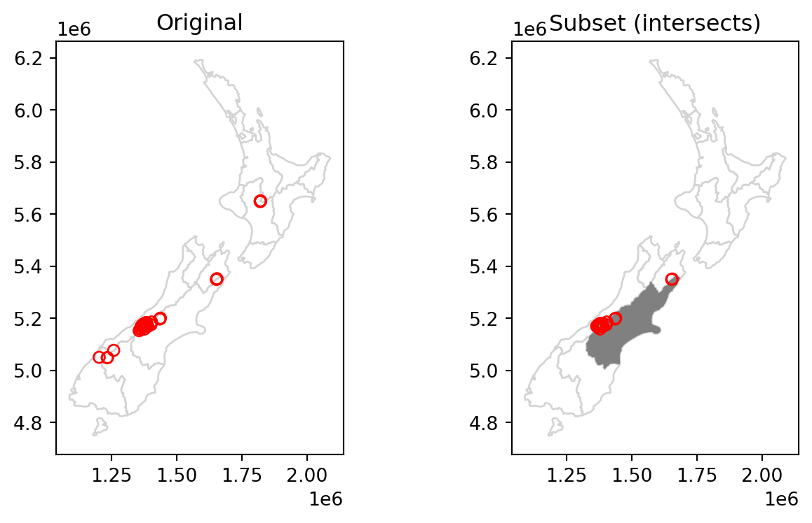
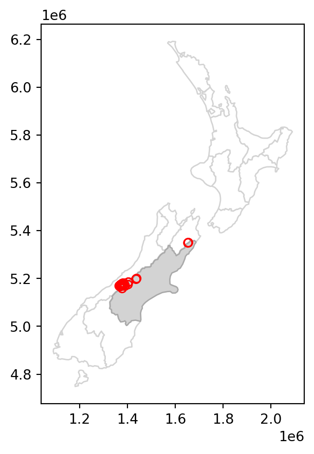
Like in attribute subsetting (Section 2.2.1), we are using a boolean series (sel), of the same length as the number of rows in the filtered table (nz_height), created based on a condition applied on itself. The difference is that the condition is not a comparison of attribute values, but an evaluation of a spatial relation. Namely, we evaluate whether each geometry of nz_height intersects with canterbury geometry, using the .intersects method.
Various topological relations can be used for spatial subsetting which determine the type of spatial relationship that features in the target object must have with the subsetting object to be selected. These include touches, crosses, or within, as we will see shortly in Section 3.2.2. Intersects (.intersects), which we used in the last example, is the the most commonly used method. This is a ‘catch all’ topological relation, that will return features in the target that touch, cross or are within the source ‘subsetting’ object. As an example of another method, we can use .disjoint to obtain all points that do not intersect with Canterbury.
sel = nz_height.disjoint(canterbury.geometry.iloc[0])
canterbury_height2 = nz_height[sel]The results are shown in Figure 3.2, which compares the original nz_height layer (left) with the subset canterbury_height2 (right).
# Original
base = nz.plot(color='white', edgecolor='lightgrey')
nz_height.plot(ax=base, color='None', edgecolor='red');
# Subset (disjoint)
base = nz.plot(color='white', edgecolor='lightgrey')
canterbury.plot(ax=base, color='lightgrey', edgecolor='darkgrey')
canterbury_height2.plot(ax=base, color='None', edgecolor='red');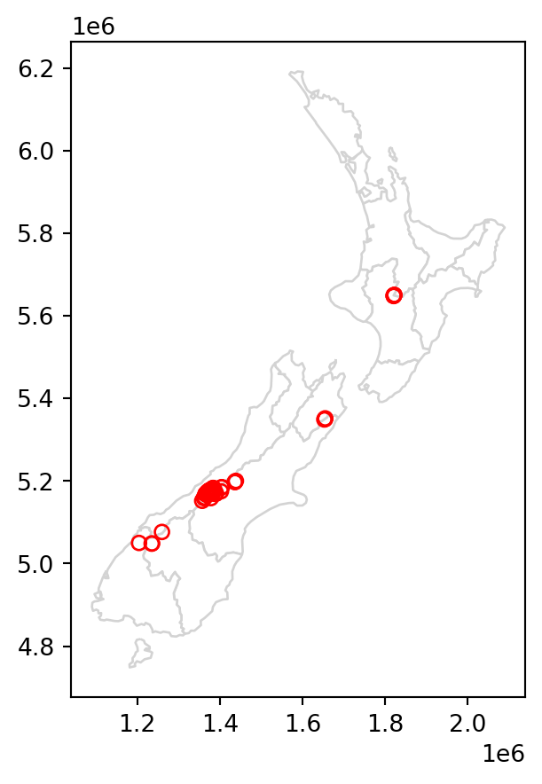
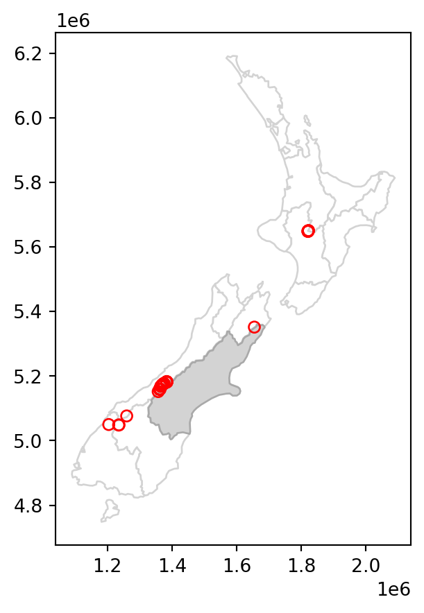
In case we need to subset according to several geometries at once, e.g., find out which points intersect with both Canterbury and Southland, we can dissolve the filtering subset, using .unary_union, before applying the .intersects (or any other) operator. For example, here is how we can subset the nz_height points which intersect with Canterbury or Southland. (Note that we are also using the .isin method, as demonstrated in the end of Section 2.2.1.)
canterbury_southland = nz[nz['Name'].isin(['Canterbury', 'Southland'])]
sel = nz_height.intersects(canterbury_southland.unary_union)
canterbury_southland_height = nz_height[sel]
canterbury_southland_height| t50_fid | elevation | geometry | |
|---|---|---|---|
| 0 | 2353944 | 2723 | POINT (1204142.603 5049971.287) |
| 4 | 2362630 | 2749 | POINT (1378169.600 5158491.453) |
| ... | ... | ... | ... |
| 93 | 2380300 | 2711 | POINT (1654213.379 5349962.973) |
| 94 | 2380308 | 2885 | POINT (1654898.622 5350462.779) |
71 rows × 3 columns
Figure 3.3 shows the results of the spatial subsetting of nz_height points by intersection with Canterbury and Southland.
# Original
base = nz.plot(color='white', edgecolor='lightgrey')
nz_height.plot(ax=base, color='None', edgecolor='red');
# Subset by intersection with two polygons
base = nz.plot(color='white', edgecolor='lightgrey')
canterbury_southland.plot(ax=base, color='lightgrey', edgecolor='darkgrey')
canterbury_southland_height.plot(ax=base, color='None', edgecolor='red');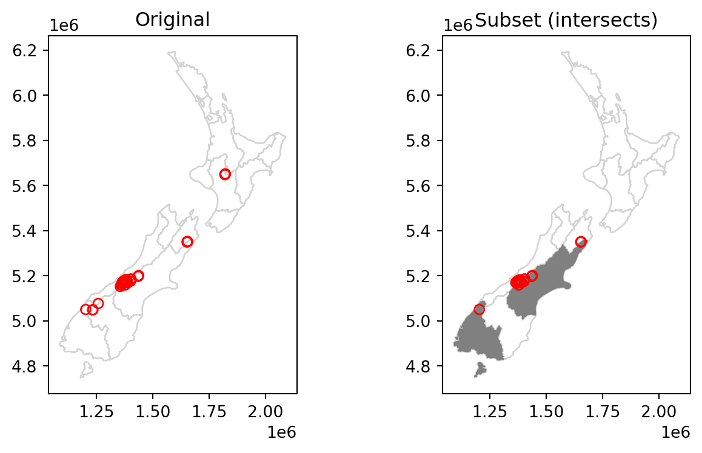
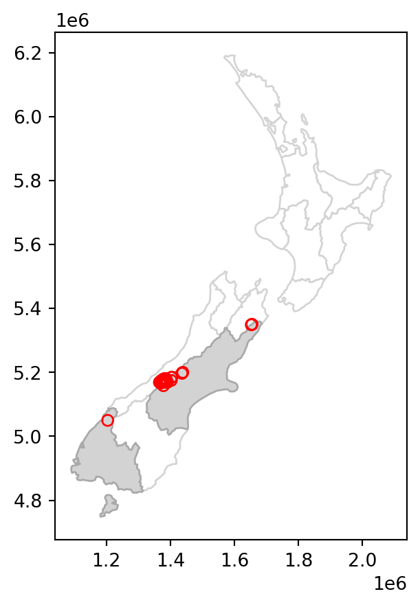
The next section further explores different types of spatial relation, also known as binary predicates (of which .intersects and .disjoint are two examples), that can be used to identify whether or not two features are spatially related.
3.2.2 Topological relations
Topological relations describe the spatial relationships between objects. “Binary topological relationships”, to give them their full name, are logical statements (in that the answer can only be True or False) about the spatial relationships between two objects defined by ordered sets of points (typically forming points, lines and polygons) in two or more dimensions (Egenhofer and Herring 1990). That may sound rather abstract and, indeed, the definition and classification of topological relations is based on mathematical foundations first published in book form in 1966 (Spanier 1995), with the field of algebraic topology continuing into the 21st century (Dieck 2008).
Despite their mathematical origins, topological relations can be understood intuitively with reference to visualizations of commonly used functions that test for common types of spatial relationships. Figure 3.4 shows a variety of geometry pairs and their associated relations. The third and fourth pairs in Figure 3.4 (from left to right and then down) demonstrate that, for some relations, order is important: while the relations equals, intersects, crosses, touches and overlaps are symmetrical, meaning that if x.relation(y) is true, y.relation(x) will also be true, relations in which the order of the geometries are important such as contains and within are not.
Note
Notice that each geometry pair has a “DE-9IM” string such as FF2F11212. DE-9IM strings describe the dimensionality (0=points, 1=lines, 2=polygons) of the pairwise intersections of the interior, boundary, and exterior, of two geometries (i.e., nine values of 0/1/2 encoded into a string). This is an advanced topic beyond the scope of this book, which can be useful to understand the difference between relation types, or define custom types of relations. See the DE-9IM strings section in Geocomputation with R (Lovelace, Nowosad, and Muenchow 2019). Also note that the shapely package contains the .relate and .relate_pattern methods, for derive and test for DE-9IM patterns, respectively.

x.relation(y) is true are printed for each geometry pair, with x represented in pink and y represented in blue. The nature of the spatial relationship for each pair is described by the Dimensionally Extended 9-Intersection Model string.In shapely, methods testing for different types of topological relations are known as “relationships”. geopandas provides their wrappers (with the same method name) which can be applied on multiple geometries at once (such as .intersects and .disjoint applied on all points in nz_height, see Section 3.2.1). To see how topological relations work in practice, let’s create a simple reproducible example, building on the relations illustrated in Figure 3.4 and consolidating knowledge of how vector geometries are represented from a previous chapter (Section 1.2.3 and Section 1.2.5).
points = gpd.GeoSeries([
shapely.Point(0.2,0.1),
shapely.Point(0.7,0.2),
shapely.Point(0.4,0.8)
])
line = gpd.GeoSeries([
shapely.LineString([(0.4,0.2), (1,0.5)])
])
poly = gpd.GeoSeries([
shapely.Polygon([(0,0), (0,1), (1,1), (1,0.5), (0,0)])
])The sample dataset which we created is composed of three is GeoSeries: named points, line, and poly, which are visualized in Figure 3.5. The last expression is a for loop used to add text labels (1, 2, and 3) to identify the points; we are going to explain the concepts of text annotations with geopandas .plot in Section 8.2.4.
base = poly.plot(color='lightgrey', edgecolor='red')
line.plot(ax=base, color='black', linewidth=7)
points.plot(ax=base, color='none', edgecolor='black')
for i in enumerate(points):
base.annotate(
i[0], xy=(i[1].x, i[1].y),
xytext=(3, 3), textcoords='offset points', weight='bold'
)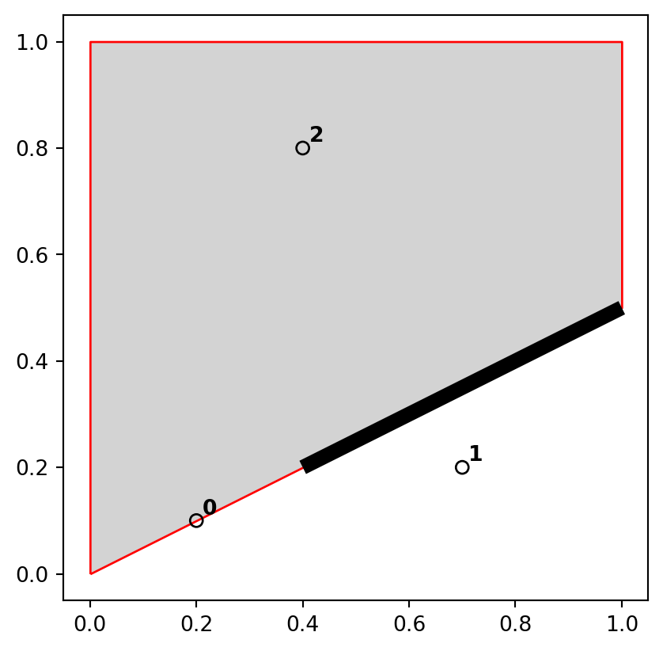
A simple query is: which of the points in points intersect in some way with polygon poly? The question can be answered by visual inspection (points 1 and 3 are touching and are within the polygon, respectively). Alternatively, we can get the solution with the .intersects method, which reports whether or not each geometry in a GeoSeries (points) intersects with a single shapely geometry (poly.iloc[0]).
points.intersects(poly.iloc[0])0 True
1 False
2 True
dtype: boolThe result shown above is a boolean Series. Its contents should match our intuition: positive (True) results are returned for the first and third point, and a negative result (False) for the second. Each value in this Series represents a feature in the first input (points).
All earlier examples in this chapter demonstrate the “many-to-one” mode of .intersects and analogous methods, where the relation is evaluated between each of several geometries in a GeoSeries/GeoDataFrame, and an individual shapely geometry. A second mode of those methods (not demonstrated here) is when both inputs are GeoSeries/GeoDataFrame objects. In such case, a “pairwise” evaluation takes place between geometries aligned by index (align=True, the default) or by position (align=False). For example, the expression nz.intersects(nz) returns a Series of 16 True values, indicating (unsurprisingly) that each geometry in nz intersects with itself.
A third mode is when we are interested in a “many-to-many” evaluation, i.e., obtaining a matrix of all pairwise combinations of geometries from two GeoSeries objects. At the time of writing, there is no built-in method to do this in geopandas. However, the .apply method can be used to repeat a “many-to-one” evaluation over all geometries in the second layer, resulting in a matrix of pairwise results. We will create another GeoSeries with two polygons, named poly2, to demonstrate this.
poly2 = gpd.GeoSeries([
shapely.Polygon([(0,0), (0,1), (1,1), (1,0.5), (0,0)]),
shapely.Polygon([(0,0), (1,0.5), (1,0), (0,0)])
])Our two input objects, points and poly2, are illustrated in Figure 3.6.
base = poly2.plot(color='lightgrey', edgecolor='red')
points.plot(ax=base, color='none', edgecolor='black')
for i in enumerate(points):
base.annotate(
i[0], xy=(i[1].x, i[1].y),
xytext=(3, 3), textcoords='offset points', weight='bold'
)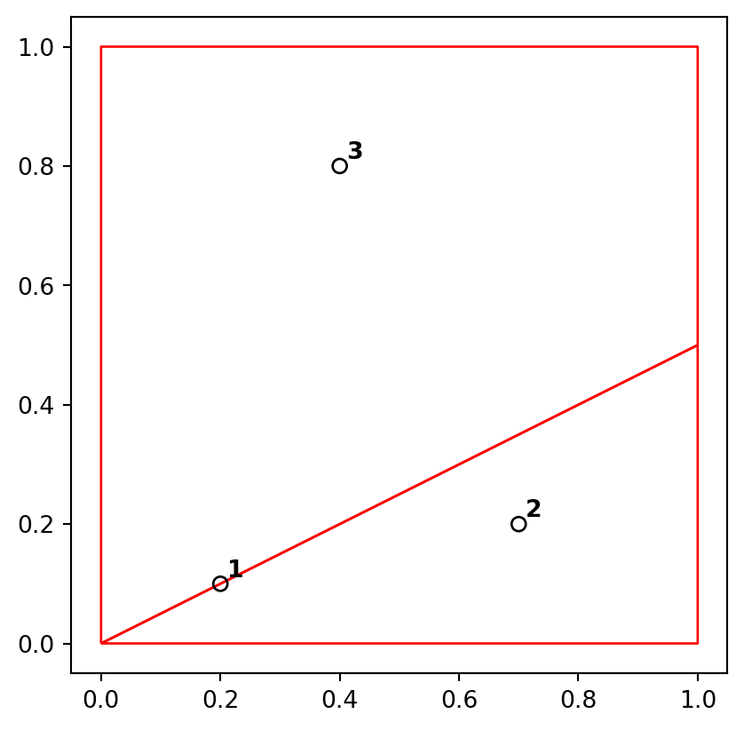
points) and two polygons (poly2)Now we can use to get the intersection relations matrix. The result is a DataFrame, where each row represents a points geometry and each column represents a poly geometry. We can see that the first point intersects with both polygons, while the second and third points intersect with one of the polygons each.
points.apply(lambda x: poly2.intersects(x))| 0 | 1 | |
|---|---|---|
| 0 | True | True |
| 1 | False | True |
| 2 | True | False |
Note
The .apply (package pandas) is used to apply a function along one of the axes of a DataFrame or GeoDataFrame. That is, we can apply a function on all rows (axis=1) or all columns (axis=0, the default). When the function being applied returns a single value, the output of .apply is a Series (e.g., .apply(len) returns the lengths of all columns, because len returns a single value). When the function returns a Series, then .apply returns a DataFrame (such as in the above example.)
Note
Since the above result, like any pairwise matrix, (1) is composed of values of the same type, and (2) has no contrasting role for rows and columns, is may be more convenient to use a plain numpy array to work with it. In such case, we can use the .to_numpy method to go from DataFrame to ndarray.
points.apply(lambda x: poly2.intersects(x)).to_numpy()array([[ True, True],
[False, True],
[ True, False]])The .intersects method returns True even in cases where the features just touch: intersects is a ‘catch-all’ topological operation which identifies many types of spatial relation, as illustrated in Figure 3.4. More restrictive questions include which points lie within the polygon, and which features are on or contain a shared boundary with it? The first question can be answered with .within, and the second with .touches.
points.within(poly.iloc[0])0 False
1 False
2 True
dtype: boolpoints.touches(poly.iloc[0])0 True
1 False
2 False
dtype: boolNote that although the first point touches the boundary polygon, it is not within it; the third point is within the polygon but does not touch any part of its border. The opposite of .intersects is .disjoint, which returns only objects that do not spatially relate in any way to the selecting object.
points.disjoint(poly.iloc[0])0 False
1 True
2 False
dtype: boolAnother useful type of relation is “within distance”, where we detect features that intersect with the target buffered by particular distance. Buffer distance determines how close target objects need to be before they are selected. This can be done by literally buffering (Section 1.2.5) the target geometry, and evaluating intersection (.intersects). Another way is to calculate the distances using the .distance method, and then evaluate whether they are within a threshold distance.
points.distance(poly.iloc[0]) < 0.20 True
1 True
2 True
dtype: boolNote that although the second point is more than 0.2 units of distance from the nearest vertex of poly, it is still selected when the distance is set to 0.2. This is because distance is measured to the nearest edge, in this case the part of the the polygon that lies directly above point 2 in Figure Figure 3.4. We can verify the actual distance between the second point and the polygon is 0.13, as follows.
points.iloc[1].distance(poly.iloc[0])0.13416407864998736This is also a good opportunity to repeat that all distance-related calculations in gopandas (and shapely) assume planar geometry, and only take into account the coordinate values. It is up to the user to make sure that all input layers are in the same projected CRS, so that this type of calculations make sense (see Section 6.4 and Section 6.5).
3.2.3 Spatial joining
Joining two non-spatial datasets uses a shared ‘key’ variable, as described in Section 2.2.3. Spatial data joining applies the same concept, but instead relies on spatial relations, described in the previous section. As with attribute data, joining adds new columns to the target object (the argument x in joining functions), from a source object (y).
The following example illustrates the process: imagine you have ten points randomly distributed across the Earth’s surface and you ask, for the points that are on land, which countries are they in? Implementing this idea in a reproducible example will build your geographic data handling skills and show how spatial joins work. The starting point is to create points that are randomly scattered over the planar surface that represents Earth’s geographic coordinates, in decimal degrees (Figure 3.7 (a)).
np.random.seed(11) ## set seed for reproducibility
bb = world.total_bounds ## the world's bounds
x = np.random.uniform(low=bb[0], high=bb[2], size=10)
y = np.random.uniform(low=bb[1], high=bb[3], size=10)
random_points = gpd.points_from_xy(x, y, crs=4326)
random_points = gpd.GeoDataFrame({'geometry': random_points})
random_points| geometry | |
|---|---|
| 0 | POINT (-115.10291 36.78178) |
| 1 | POINT (-172.98891 -71.02938) |
| ... | ... |
| 8 | POINT (159.05039 -34.99599) |
| 9 | POINT (126.28622 -62.49509) |
10 rows × 1 columns
The scenario illustrated in Figure 3.7 shows that the random_points object (top left) lacks attribute data, while the world (top right) has attributes, including country names shown for a sample of countries in the legend. Before creating the joined dataset, we use spatial subsetting to create world_random, which contains only countries that contain random points, to verify the number of country names returned in the joined dataset should be four (see the top right panel of Figure 3.7 (b)).
world_random = world[world.intersects(random_points.unary_union)]
world_random| iso_a2 | name_long | continent | ... | lifeExp | gdpPercap | geometry | |
|---|---|---|---|---|---|---|---|
| 4 | US | United States | North America | ... | 78.841463 | 51921.984639 | MULTIPOLYGON (((-171.73166 63.7... |
| 18 | RU | Russian Federation | Europe | ... | 70.743659 | 25284.586202 | MULTIPOLYGON (((-180.00000 64.9... |
| 52 | ML | Mali | Africa | ... | 57.007000 | 1865.160622 | MULTIPOLYGON (((-11.51394 12.44... |
| 159 | AQ | Antarctica | Antarctica | ... | NaN | NaN | MULTIPOLYGON (((-180.00000 -89.... |
4 rows × 11 columns
Spatial joins are implemented with x.sjoin(y), as illustrated in the code chunk below. The output is the random_joined object which is illustrated in Figure 3.7 (c).
random_joined = random_points.sjoin(world, how='left')
random_joined| geometry | index_right | iso_a2 | ... | pop | lifeExp | gdpPercap | |
|---|---|---|---|---|---|---|---|
| 0 | POINT (-115.10291 36.78178) | 4.0 | US | ... | 318622525.0 | 78.841463 | 51921.984639 |
| 1 | POINT (-172.98891 -71.02938) | NaN | NaN | ... | NaN | NaN | NaN |
| ... | ... | ... | ... | ... | ... | ... | ... |
| 8 | POINT (159.05039 -34.99599) | NaN | NaN | ... | NaN | NaN | NaN |
| 9 | POINT (126.28622 -62.49509) | NaN | NaN | ... | NaN | NaN | NaN |
10 rows × 12 columns
Figure 3.7 shows the input points and countries, the illustration of intersecting countries, and the join result.
# Random points
base = world.plot(color='white', edgecolor='lightgrey')
random_points.plot(ax=base, color='None', edgecolor='red');
# World countries intersecting with the points
base = world.plot(color='white', edgecolor='lightgrey')
world_random.plot(ax=base, column='name_long');
# Points with joined country names
base = world.plot(color='white', edgecolor='lightgrey')
random_joined.geometry.plot(ax=base, color='grey')
random_joined.plot(ax=base, column='name_long', legend=True);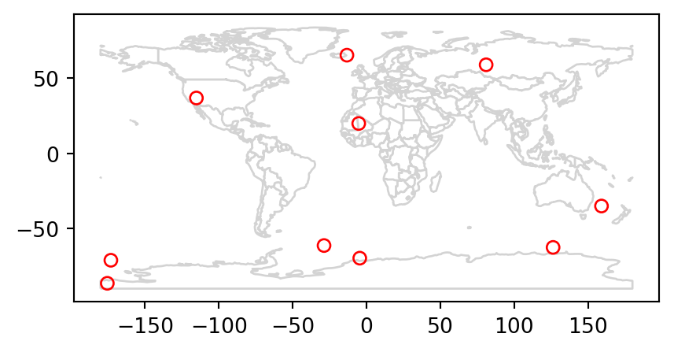
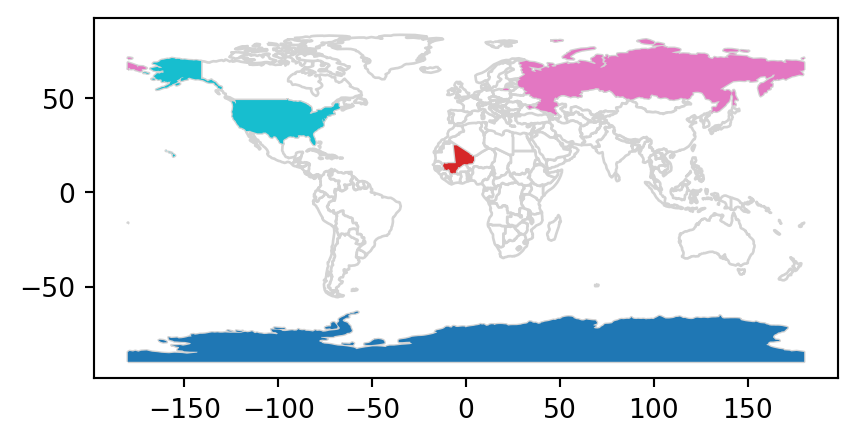
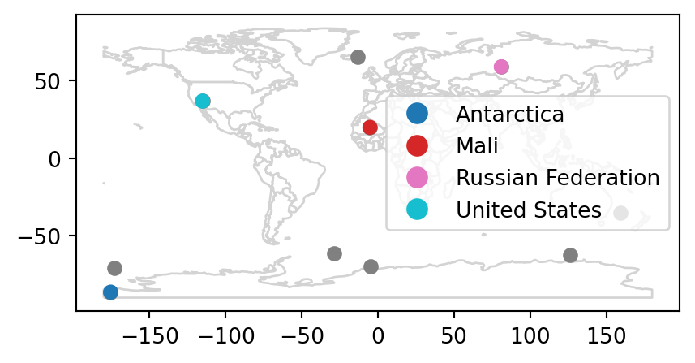
3.2.4 Non-overlapping joins
Sometimes two geographic datasets do not touch but still have a strong geographic relationship. The datasets cycle_hire and cycle_hire_osm provide a good example. Plotting them reeveals that they are often closely related but they do not seem to touch, as shown in Figure 3.8.
base = cycle_hire.plot(edgecolor='blue', color='none')
cycle_hire_osm.plot(ax=base, edgecolor='red', color='none');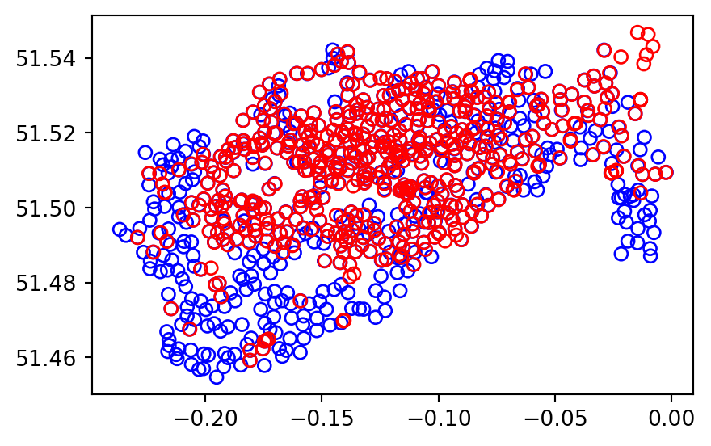
We can check if any of the points are the same by creating a pairwise boolean matrix of .intersects relations, then evaluating whether any of the values in it is True. Note that the .to_numpy method is applied to go from a DataFrame to an ndarray, for which .any gives a global rather than a row-wise summary. This is what we want in this case, because we are interested in whether any of the points intersect, not whether any of the points in each row intersect.
m = cycle_hire.geometry.apply(
lambda x: cycle_hire_osm.geometry.intersects(x)
)
m.to_numpy().any()FalseImagine that we need to join the capacity variable in cycle_hire_osm ('capacity') onto the official ‘target’ data contained in cycle_hire, which looks as follows.
cycle_hire| id | name | area | nbikes | nempty | geometry | |
|---|---|---|---|---|---|---|
| 0 | 1 | River Street | Clerkenwell | 4 | 14 | POINT (-0.10997 51.52916) |
| 1 | 2 | Phillimore Gardens | Kensington | 2 | 34 | POINT (-0.19757 51.49961) |
| ... | ... | ... | ... | ... | ... | ... |
| 740 | 776 | Abyssinia Close | Clapham Junction | 10 | 10 | POINT (-0.16703 51.46033) |
| 741 | 777 | Limburg Road | Clapham Common | 7 | 11 | POINT (-0.16530 51.46192) |
742 rows × 6 columns
This is when a non-overlapping join is needed. Spatial join (gpd.sjoin) along with buffered geometries (see Section 4.2.3) can be used to do that, as demonstrated below using a threshold distance of 20 \(m\). Note that we transform the data to a projected CRS (27700) to use real buffer distances, in meters (see Section 6.4).
crs = 27700
cycle_hire_buffers = cycle_hire.copy().to_crs(crs)
cycle_hire_buffers.geometry = cycle_hire_buffers.buffer(20)
cycle_hire_buffers = gpd.sjoin(cycle_hire_buffers, cycle_hire_osm.to_crs(crs))
cycle_hire_buffers| id | name_left | area | ... | capacity | cyclestreets_id | description | |
|---|---|---|---|---|---|---|---|
| 0 | 1 | River Street | Clerkenwell | ... | 9.0 | None | None |
| 1 | 2 | Phillimore Gardens | Kensington | ... | 27.0 | None | None |
| ... | ... | ... | ... | ... | ... | ... | ... |
| 729 | 765 | Ranelagh Gardens | Fulham | ... | 29.0 | None | None |
| 737 | 773 | Tallis Street | Temple | ... | 14.0 | None | None |
458 rows × 12 columns
Note that the number of rows in the joined result is greater than the target. This is because some cycle hire stations in cycle_hire_buffers have multiple matches in cycle_hire_osm. To aggregate the values for the overlapping points and return the mean, we can use the aggregation methods shown in Section 2.2.2, resulting in an object with the same number of rows as the target. We also go back from buffers to points using .centroid method.
cycle_hire_buffers = cycle_hire_buffers[['id', 'capacity', 'geometry']] \
.dissolve(by='id', aggfunc='mean') \
.reset_index()
cycle_hire_buffers.geometry = cycle_hire_buffers.centroid
cycle_hire_buffers| id | geometry | capacity | |
|---|---|---|---|
| 0 | 1 | POINT (531203.517 182832.066) | 9.0 |
| 1 | 2 | POINT (525208.067 179391.922) | 27.0 |
| ... | ... | ... | ... |
| 436 | 765 | POINT (524652.998 175817.001) | 29.0 |
| 437 | 773 | POINT (531435.032 180916.010) | 14.0 |
438 rows × 3 columns
The capacity of nearby stations can be verified by comparing a plot of the capacity of the source cycle_hire_osm data, with the join results in the new object cycle_hire_buffers (Figure 3.9).
# Input
fig, ax = plt.subplots(1, 1, figsize=(6, 3))
cycle_hire_osm.plot(column='capacity', legend=True, ax=ax);
# Join result
fig, ax = plt.subplots(1, 1, figsize=(6, 3))
cycle_hire_buffers.plot(column='capacity', legend=True, ax=ax);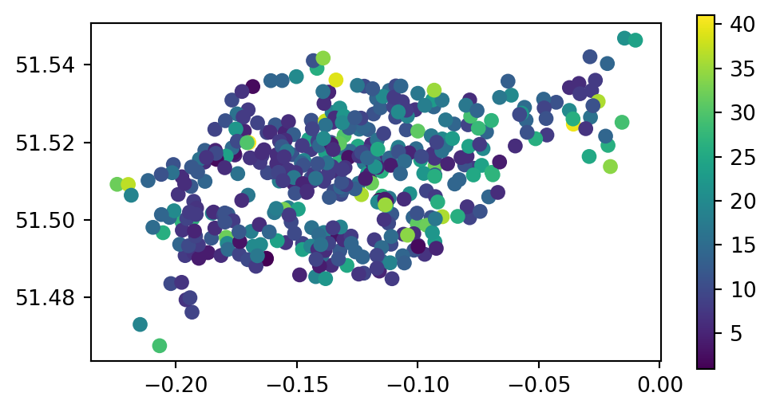
cycle_hire_osm)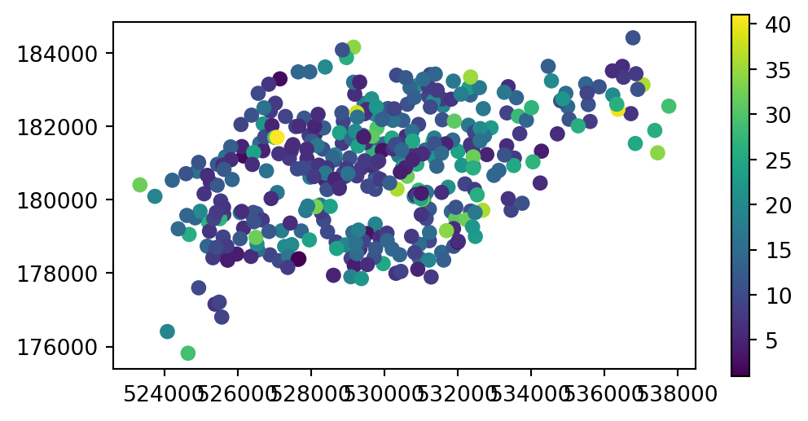
z)3.2.5 Spatial aggregation
As with attribute data aggregation, spatial data aggregation condenses data: aggregated outputs have fewer rows than non-aggregated inputs. Statistical aggregating functions, such as mean, average, or sum, summarize multiple values of a variable, and return a single value per grouping variable. Section 2.2.2 demonstrated how the .groupby method, combined with summary functions such as .sum, condense data based on attribute variables. This section shows how grouping by spatial objects can be achieved using spatial joins combined with non-spatial aggregation.
Returning to the example of New Zealand, imagine you want to find out the average height of nz_height points in each region. It is the geometry of the source (nz) that defines how values in the target object (nz_height) are grouped. This can be done in three steps:
- Figuring out which
nzregion eachnz_heightpoint falls in—usinggpd.sjoin - Summarizing the average elevation per region—using
.groupbyand.mean - Joining the result back to
nz—usingpd.merge
First, we ‘attach’ the region classification of each point, using spatial join (Section 3.2.3). Note that we are using the minimal set of columns required: the geometries (for the spatial join to work), the point elevation (to later calculate an average), and the region name (to use as key when joining the results back to nz). The result tells us which nz region each elevation point falls in.
nz_height2 = gpd.sjoin(
nz_height[['elevation', 'geometry']],
nz[['Name', 'geometry']],
how='left'
)
nz_height2| elevation | geometry | index_right | Name | |
|---|---|---|---|---|
| 0 | 2723 | POINT (1204142.603 5049971.287) | 12 | Southland |
| 1 | 2820 | POINT (1234725.325 5048309.302) | 11 | Otago |
| ... | ... | ... | ... | ... |
| 99 | 2720 | POINT (1822262.592 5650428.656) | 2 | Waikato |
| 100 | 2732 | POINT (1822492.184 5650492.304) | 2 | Waikato |
101 rows × 4 columns
Second, we calculate the average elevation, using ordinary (non-spatial) aggregation (Section 2.2.2). This result tells us the average elevation of all nz_height points located within each nz region.
nz_height2 = nz_height2.groupby('Name')[['elevation']].mean()
nz_height2| elevation | |
|---|---|
| Name | |
| Canterbury | 2994.600000 |
| Manawatu-Wanganui | 2777.000000 |
| ... | ... |
| Waikato | 2734.333333 |
| West Coast | 2889.454545 |
7 rows × 1 columns
The third and final step is joining the averages back to the nz layer.
nz2 = pd.merge(nz[['Name', 'geometry']], nz_height2, on='Name', how='left')
nz2| Name | geometry | elevation | |
|---|---|---|---|
| 0 | Northland | MULTIPOLYGON (((1745493.196 600... | NaN |
| 1 | Auckland | MULTIPOLYGON (((1803822.103 590... | NaN |
| ... | ... | ... | ... |
| 14 | Nelson | MULTIPOLYGON (((1624866.279 541... | NaN |
| 15 | Marlborough | MULTIPOLYGON (((1686901.914 535... | 2720.0 |
16 rows × 3 columns
We now have create the nz_height4 layer, which gives the average nz_height elevation value per polygon. The result is shown in Figure 3.10. Note that the missing_kwds part determines the style of geometries where the symbology attribute (elevation) is missing, because there were no nz_height points overlapping with them. The default is to omit them, which is usually not what we want, but with {'color':'none','edgecolor':'black'}, those polygons are shown with black outline and no fill.
nz2.plot(
column='elevation',
legend=True,
cmap='Blues', edgecolor='black',
missing_kwds={'color': 'none', 'edgecolor': 'black'}
);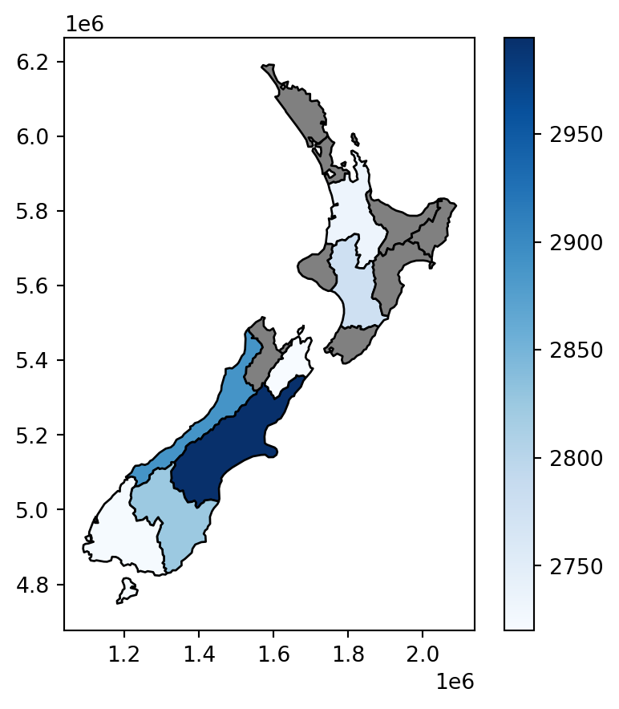
3.2.6 Joining incongruent layers
Spatial congruence is an important concept related to spatial aggregation. An aggregating object (which we will refer to as y) is congruent with the target object (x) if the two objects have shared borders. Often this is the case for administrative boundary data, whereby larger units—such as Middle Layer Super Output Areas (MSOAs) in the UK, or districts in many other European countries—are composed of many smaller units.
Incongruent aggregating objects, by contrast, do not share common borders with the target (Qiu, Zhang, and Zhou 2012). This is problematic for spatial aggregation (and other spatial operations) illustrated in Figure 3.11: aggregating the centroid of each sub-zone will not return accurate results. Areal interpolation overcomes this issue by transferring values from one set of areal units to another, using a range of algorithms including simple area weighted approaches and more sophisticated approaches such as ‘pycnophylactic’ methods (Tobler 1979).
To demonstrate joining incongruent layers, we will create a “synthetic” layer comprising a regular grid of rectangles of size \(100\times100\) \(km\), covering the extent of the nz layer. This recipe can be used to create a regular grid covering any given layer (other than nz), at the specified resolution (res). Most of the functions have been explained in previous chapters; we leave it as an exerise for the reader to explore how the code works.
# Settings: grid extent, resolution, and CRS
bounds = nz.total_bounds
crs = nz.crs
res = 100000
# Calculating grid dimensions
xmin, ymin, xmax, ymax = bounds
cols = list(range(int(np.floor(xmin)), int(np.ceil(xmax+res)), res))
rows = list(range(int(np.floor(ymin)), int(np.ceil(ymax+res)), res))
rows.reverse()
# For each cell, create 'shapely' polygon (rectangle)
polygons = []
for x in cols:
for y in rows:
polygons.append(
shapely.Polygon([(x,y), (x+res, y), (x+res, y-res), (x, y-res)])
)
# To 'GeoDataFrame'
grid = gpd.GeoDataFrame({'geometry': polygons}, crs=nz.crs)
# Remove rows/columns beyond the extent
sel = grid.intersects(shapely.box(*nz.total_bounds))
grid = grid[sel]
# Add consecultive IDs
grid['id'] = grid.index
grid| geometry | id | |
|---|---|---|
| 0 | POLYGON ((1090143.000 6248536.0... | 0 |
| 1 | POLYGON ((1090143.000 6148536.0... | 1 |
| ... | ... | ... |
| 157 | POLYGON ((1990143.000 4948536.0... | 157 |
| 158 | POLYGON ((1990143.000 4848536.0... | 158 |
150 rows × 2 columns
Figure 3.11 shows the newly created grid layer, along with the nz layer.
base = grid.plot(color='none', edgecolor='grey')
nz.plot(
ax=base,
column='Population',
edgecolor='black',
legend=True,
cmap='viridis_r'
);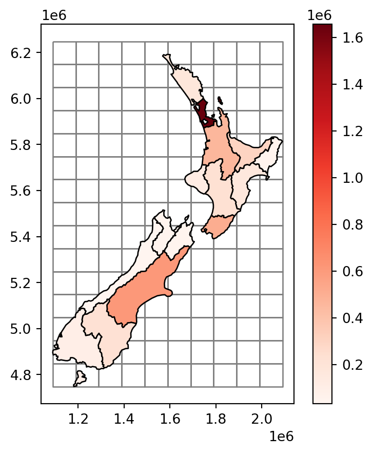
nz layer, with population size in each region, overlaid with a regular grid of rectanglesOur goal, now, is to “transfer” the 'Population' attribute (Figure 3.11) to the rectangular grid polygons, which is an example of a join between incongruent layers. To do that, we basically need to calculate–for each grid cell—the weighted sum of the population in nz polygons coinciding with that cell. The weights in the weighted sum calculation are the ratios between the area of the coinciding “part” out of the entire nz polygon. That is, we (inevitably) assume that the population in each nz polygon is equally distributed across space, therefore a partial nz polygon contains the respective partial population size.
We start by calculating the entire area of each nz polygon, as follows, using the .area method (Section 1.2.7).
nz['area'] = nz.area
nz| Name | Island | Land_area | ... | Sex_ratio | geometry | area | |
|---|---|---|---|---|---|---|---|
| 0 | Northland | North | 12500.561149 | ... | 0.942453 | MULTIPOLYGON (((1745493.196 600... | 1.289058e+10 |
| 1 | Auckland | North | 4941.572557 | ... | 0.944286 | MULTIPOLYGON (((1803822.103 590... | 4.911565e+09 |
| ... | ... | ... | ... | ... | ... | ... | ... |
| 14 | Nelson | South | 422.195242 | ... | 0.925967 | MULTIPOLYGON (((1624866.279 541... | 4.080754e+08 |
| 15 | Marlborough | South | 10457.745485 | ... | 0.957792 | MULTIPOLYGON (((1686901.914 535... | 1.046485e+10 |
16 rows × 8 columns
Next, we use the .overlay method to calculate the pairwise intersections between nz and grid. As a result, we now have a layer where each nz polygon is “split” according to the grid polygons, hereby named nz_grid.
nz_grid = nz.overlay(grid)
nz_grid = nz_grid[['id', 'area', 'Population', 'geometry']]
nz_grid| id | area | Population | geometry | |
|---|---|---|---|---|
| 0 | 64 | 1.289058e+10 | 175500.0 | POLYGON ((1586362.965 6168009.0... |
| 1 | 80 | 1.289058e+10 | 175500.0 | POLYGON ((1590143.000 6162776.6... |
| ... | ... | ... | ... | ... |
| 108 | 87 | 4.080754e+08 | 51400.0 | POLYGON ((1649908.695 5455398.2... |
| 109 | 87 | 1.046485e+10 | 46200.0 | MULTIPOLYGON (((1678688.086 545... |
110 rows × 4 columns
Figure 3.12 illustrates the effect of .overlay:
nz_grid.plot(color='none', edgecolor='black');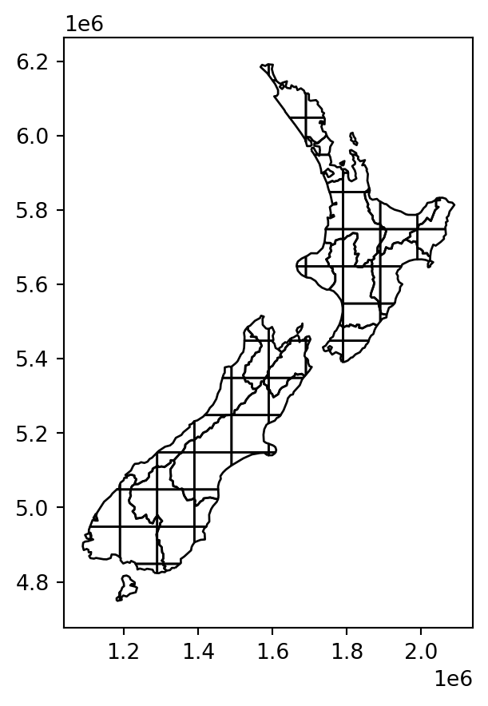
nz and grid, calculated with .overlayWe also need to calculate the areas of the intersections, here into a new attribute 'area_sub'. If an nz polygon was completely within a single grid polygon, then area_sub is going to be equal to area; otherwise, it is going to be smaller.
nz_grid['area_sub'] = nz_grid.area
nz_grid| id | area | Population | geometry | area_sub | |
|---|---|---|---|---|---|
| 0 | 64 | 1.289058e+10 | 175500.0 | POLYGON ((1586362.965 6168009.0... | 3.231015e+08 |
| 1 | 80 | 1.289058e+10 | 175500.0 | POLYGON ((1590143.000 6162776.6... | 4.612641e+08 |
| ... | ... | ... | ... | ... | ... |
| 108 | 87 | 4.080754e+08 | 51400.0 | POLYGON ((1649908.695 5455398.2... | 1.716260e+07 |
| 109 | 87 | 1.046485e+10 | 46200.0 | MULTIPOLYGON (((1678688.086 545... | 4.526248e+08 |
110 rows × 5 columns
The resulting layer nz_grid, which the area_sub attribute, is shown in Figure 3.13.
base = grid.plot(color='none', edgecolor='grey')
nz_grid.plot(ax=base, column='area_sub', edgecolor='black', legend=True, cmap='viridis_r');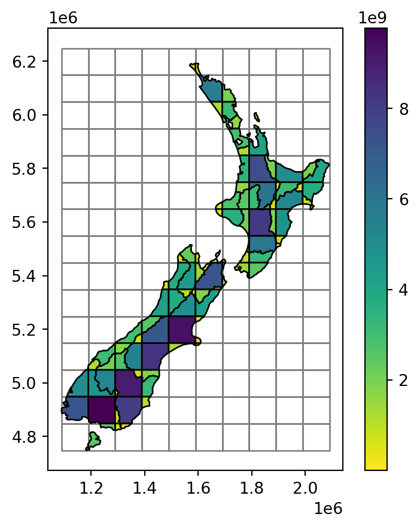
nz_grid layerNote that each of the “intersections” still holds the Population attribute of its “origin” feature of nz, i.e., each portion of the nz area is associated with the original complete population count for that area. The real population size of each nz_grid feature, however, is smaller, or equal, depending on the geographic area proportion that it occupies out of the original nz feature. To make the “correction”, we first calculate the ratio (area_prop) and then multiply it by the population. The new (lowercase) attribute population now has the correct estimate of population sizes in nz_grid:
nz_grid['area_prop'] = nz_grid['area_sub'] / nz_grid['area']
nz_grid['population'] = nz_grid['Population'] * nz_grid['area_prop']
nz_grid| id | area | Population | ... | area_sub | area_prop | population | |
|---|---|---|---|---|---|---|---|
| 0 | 64 | 1.289058e+10 | 175500.0 | ... | 3.231015e+08 | 0.025065 | 4398.897141 |
| 1 | 80 | 1.289058e+10 | 175500.0 | ... | 4.612641e+08 | 0.035783 | 6279.925114 |
| ... | ... | ... | ... | ... | ... | ... | ... |
| 108 | 87 | 4.080754e+08 | 51400.0 | ... | 1.716260e+07 | 0.042057 | 2161.752203 |
| 109 | 87 | 1.046485e+10 | 46200.0 | ... | 4.526248e+08 | 0.043252 | 1998.239223 |
110 rows × 7 columns
What is left to be done is to sum (see Section 2.2.2) the population in all parts forming the same grid cell and join (see Section 2.2.3) them back to the grid layer. Note that many of the grid cells have “No Data” for population, because they have no intersection with nz at all (Figure 3.11).
nz_grid = nz_grid.groupby('id')['population'].sum().reset_index()
grid = pd.merge(grid, nz_grid[['id', 'population']], on='id', how='left')
grid| geometry | id | population | |
|---|---|---|---|
| 0 | POLYGON ((1090143.000 6248536.0... | 0 | NaN |
| 1 | POLYGON ((1090143.000 6148536.0... | 1 | NaN |
| ... | ... | ... | ... |
| 148 | POLYGON ((1990143.000 4948536.0... | 157 | NaN |
| 149 | POLYGON ((1990143.000 4848536.0... | 158 | NaN |
150 rows × 3 columns
Figure 3.14 shows the final result grid with the incongruently-joined population attribute from nz.
base = grid.plot(column='population', edgecolor='black', legend=True, cmap='viridis_r');
nz.plot(ax=base, color='none', edgecolor='grey', legend=True);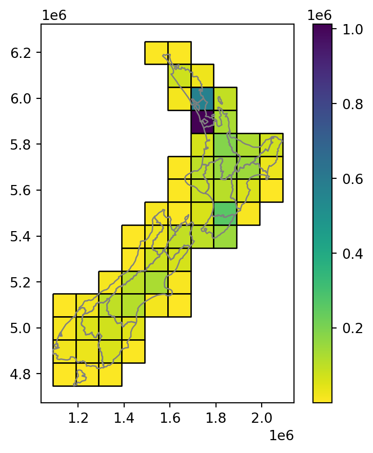
nz layer and a regular grid of rectangles: final resultWe can demonstrate that, expectedly, the summed population in nz and grid is identical, even though the geometry is different (since we created grid to completely cover nz), by comparing the .sum of the population attribute in both layers.
nz['Population'].sum()4787200.0grid['population'].sum()4787199.999999998The procedure in this section is known as an area-weighted interpolation of a spatially extensive (e.g., population) variable. In extensive interpolation, we assume that the variable of interest represents counts (such as, here, inhabitants) uniformly distributed across space. In such case, each “part” of a given polygon captures the respective proportion of counts (such as, half of a region with \(N\) inhabitants contains \(N/2\) ihnabitants). Accordingly, summing the parts gives the total count of the total area.
An area-weighted interpolation of a spatially intensive variable (e.g., population density) is almost identical, except that we would have to calculate the weighted .mean rather than .sum, to preserve the average rather than the sum. In intensive interpolation, we assume that the variable of interest represents counts per unit area, i.e., density. Since density is (assumed to be) uniform, any “part” of a given polygon has exactly the same density as that of the whole polygon. Density values are therefore computed as weighted averages, rather than sums, of the parts. Also see the “Area-weighted interpolation” section in Pebesma and Bivand (2023).
3.2.7 Distance relations
While topological relations are binary—a feature either intersects with another or does not—distance relations are continuous. The distance between two objects is calculated with the .distance method. The method is applied on a GeoSeries (or a GeoDataFrame), with the argument being an individual shapely geometry. The result is a Series of pairwise distances.
Note
geopandas uses similar syntax and mode of operation for many of its methods and functions, including:
- Numeric calculations, such as
.distance(this section), returning numeric values - Topological evaluations methods, such as
.intersectsor.disjoint(Section 3.2.2), returning boolean values - Geometry generating-methods, such as
.intersection(Section 4.2.5), returning geometries
In all cases, the input is a GeoSeries and (or a GeoDataFrame) and a shapely geometry, and the output is a Series or GeoSeries of results, contrasting each geometry from the GeoSeries with the shapely geometry. The examples in this book demonstrate this, so called “many-to-one”, mode of the functions.
All of the above-mentioned methods also have a pairwise mode, perhaps less useful and not used in the book, where we evaluate relations between pairs of geometries in two GeoSeries, aligned either by index or by position.
To illustrate the .distance method, let’s take the three highest point in New Zealand with .sort_values and .iloc.
nz_highest = nz_height \
.sort_values(by='elevation', ascending=False) \
.iloc[:3, :]
nz_highest| t50_fid | elevation | geometry | |
|---|---|---|---|
| 64 | 2372236 | 3724 | POINT (1369317.630 5169132.284) |
| 63 | 2372235 | 3717 | POINT (1369512.866 5168235.616) |
| 67 | 2372252 | 3688 | POINT (1369381.942 5168761.875) |
Additionally, we need the geographic centroid of the Canterbury region (canterbury, created in Section 3.2.1).
canterbury_centroid = canterbury.centroid.iloc[0]Now we are able to apply .distance to calculate the distances from each of the three elevation points to the centroid of the Canterbury region.
nz_highest.distance(canterbury_centroid)64 115539.995747
63 115390.248038
67 115493.594066
dtype: float64To obtain a distance matrix, i.e., a pairwise set of distances between all combinations of features in objects x and y, we need to use the method (analogous to the way we created the .intersects boolean matrix in Section 3.2.2). To illustrate this, let’s now take two regions in nz, Otago and Canterbury, represented by the object co.
sel = nz['Name'].str.contains('Canter|Otag')
co = nz[sel]
co| Name | Island | Land_area | ... | Sex_ratio | geometry | area | |
|---|---|---|---|---|---|---|---|
| 10 | Canterbury | South | 44504.499091 | ... | 0.975327 | MULTIPOLYGON (((1686901.914 535... | 4.532656e+10 |
| 11 | Otago | South | 31186.309188 | ... | 0.951169 | MULTIPOLYGON (((1335204.789 512... | 3.190356e+10 |
2 rows × 8 columns
The distance matrix (technically speaking, a DataFrame) d between each of the first three elevation points, and the two regions, is then obtained as follows. In plain language, we take the geometry from each each row in nz_height.iloc[:3,:], and apply the .distance method on co with its rows as the argument.
d = nz_height.iloc[:3, :].apply(lambda x: co.distance(x.geometry), axis=1)
d| 10 | 11 | |
|---|---|---|
| 0 | 123537.158269 | 15497.717252 |
| 1 | 94282.773074 | 0.000000 |
| 2 | 93018.560814 | 0.000000 |
Note that the distance between the second and third features in nz_height and the second feature in co is zero. This demonstrates the fact that distances between points and polygons refer to the distance to any part of the polygon: the second and third points in nz_height are in Otago, which can be verified by plotting them (two almost completly overlappling points in Figure 3.15).
base = co.plot(color='lightgrey', edgecolor='black')
nz_height.iloc[:3, :].plot(ax=base, color='none', edgecolor='black');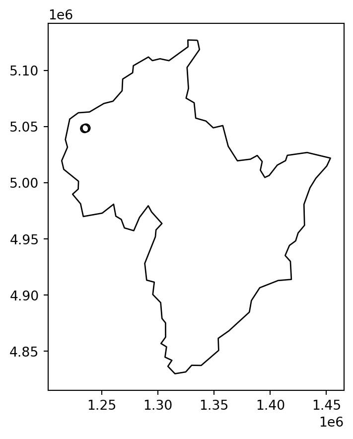
nz_height points, and the Otago and Canterbury regions from nz3.3 Spatial operations on raster data
This section builds on Section 2.3, which highlights various basic methods for manipulating raster datasets, to demonstrate more advanced and explicitly spatial raster operations, and uses the elev.tif and grain.tif rasters manually created in Section 1.3.2.
3.3.1 Spatial subsetting
The previous chapter (and especially Section 2.3) demonstrated how to retrieve values associated with specific row and column combinations from a raster. Raster values can also be extracted by location (coordinates) and other spatial objects. To use coordinates for subsetting, we can use the .sample method of a rasterio file connection object, combined with a list of coordinate tuples. The methods is demonstrated below to find the value of the cell that covers a point located at coordinates of (0.1,0.1) in elev. The returned object is a generator. The rationale for returning a generator, rather than a list, is memory efficiency. The number of sampled points may be huge, in which case we would want to “generate” the values one at a time rather than all at once.
src_elev.sample([(0.1, 0.1)])<generator object sample_gen at 0x7f0b28341380>
Note
The technical terms iterable, iterator, and generator in Python may be confusing, so here is a short summary, ordered from most general to most specific:
- An iterable is any object that we can iterate on, such as using a
forloop. For example, alistis iterable. - An iterator is an object that represents a stream of data, which we can go over, each time getting the next element using
next. Iterators are also iterable, meaning that you can over them in a loop, but they are stateful (e.g., they remember which item was obtained usingnext), meaning that you can go over them just once. - A generator is a function that returns an iterator. For example, the
.samplemethod in the above example is a generator. Therasteriopackages extensively uses generators, as we will see later on (see Section 5.4.1, Section 5.5.1).
In case we nevertheless want all values at once, such as when the number of points is small, we can force the generatrion of all values from a generator at once, using list. Since there was just one point, the result is one extracted value, in this case 16.
list(src_elev.sample([(0.1, 0.1)]))[array([16], dtype=uint8)]We can use the same technique to extract the values of multiple points at once. For example, here we extract the raster values at two points, (0.1,0.1) and (1.1,1.1). The resulting values are 16 and 6.
list(src_elev.sample([(0.1, 0.1), (1.1, 1.1)]))[array([16], dtype=uint8), array([6], dtype=uint8)]The location of the two sample points on top of the elev.tif raster is illustrated in Figure 3.16.
fig, ax = plt.subplots()
rasterio.plot.show(src_elev, ax=ax)
gpd.GeoSeries([shapely.Point(0.1, 0.1)]).plot(color='black', ax=ax)
gpd.GeoSeries([shapely.Point(1.1, 1.1)]).plot(color='black', ax=ax);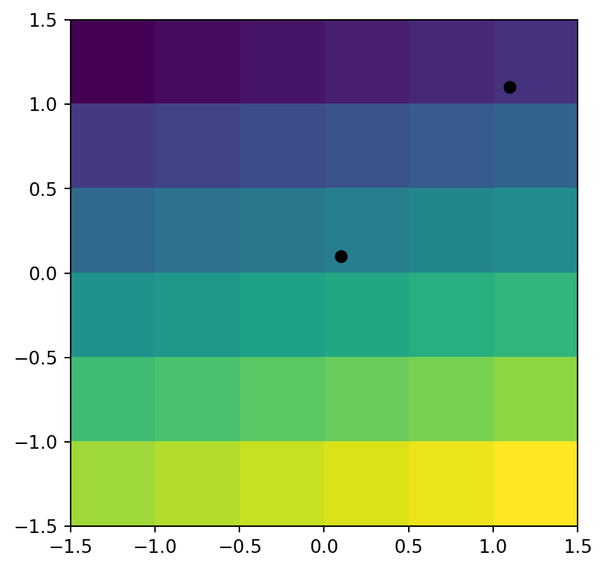
elev.tif raster, and two points where we extract its values
Note
We elaborate on the plotting technique used to display the points and the raster in Section 8.2.5. We will also introduce a more user-friendly and general method to extract raster values to points, using the rasterstats package, in Section 5.3.1.
Another common use case of spatial subsetting is using a boolean mask, based on another raster with the same extent and resolution, or the original one, as illustrated in Figure 3.17. To do that, we “erase” the values in the array of one raster, according to another corresponding “mask” raster. For example, let us read (Section 1.3.1) the elev.tif raster values into an array named elev (Figure 3.17 (a)),
elev = src_elev.read(1)
elevarray([[ 1, 2, 3, 4, 5, 6],
[ 7, 8, 9, 10, 11, 12],
[13, 14, 15, 16, 17, 18],
[19, 20, 21, 22, 23, 24],
[25, 26, 27, 28, 29, 30],
[31, 32, 33, 34, 35, 36]], dtype=uint8)and create a corresponding random boolean mask named mask (Figure 3.17 (b)), of the same shape as elev.tif with values randomly assigned to True and False.
np.random.seed(1)
mask = np.random.choice([True, False], src_elev.shape)
maskarray([[False, False, True, True, False, False],
[False, False, False, True, True, False],
[ True, False, False, True, True, False],
[ True, True, True, False, True, True],
[False, True, True, True, False, True],
[ True, True, False, False, False, False]])Next, suppose that we want to keep only those values of elev which are False in mask (i.e., they are not masked). In other words, we want to mask elev with mask. The result will be stored in a copy named masked_elev (Figure 3.17 (c)). In the case of elev.tif, to be able to store np.nan in the array of values, we also need to convert it to float (see Section 2.3.2). Afterwards, masking is a matter of assigning np.nan into a subset defined by the mask, using the “boolean array indexing” syntax of numpy.
masked_elev = elev.copy()
masked_elev = masked_elev.astype('float64')
masked_elev[mask] = np.nan
masked_elevarray([[ 1., 2., nan, nan, 5., 6.],
[ 7., 8., 9., nan, nan, 12.],
[nan, 14., 15., nan, nan, 18.],
[nan, nan, nan, 22., nan, nan],
[25., nan, nan, nan, 29., nan],
[nan, nan, 33., 34., 35., 36.]])Figure 3.17 shows the original elev raster, the mask raster, and the resulting masked_elev raster.
rasterio.plot.show(elev);
rasterio.plot.show(mask);
rasterio.plot.show(masked_elev);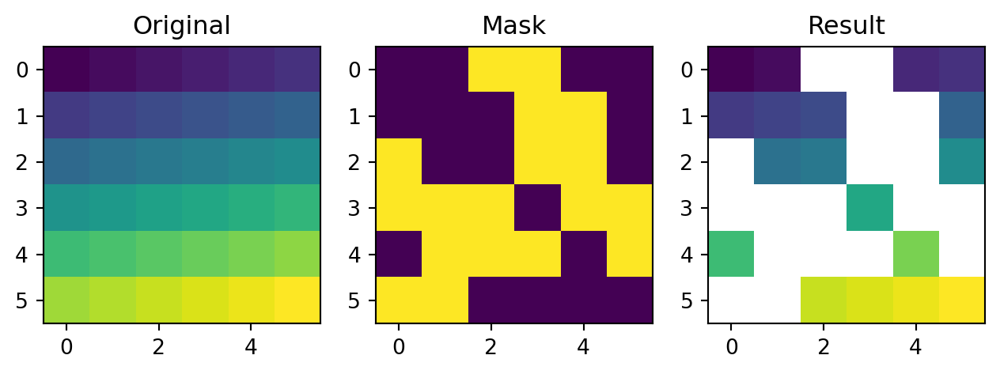
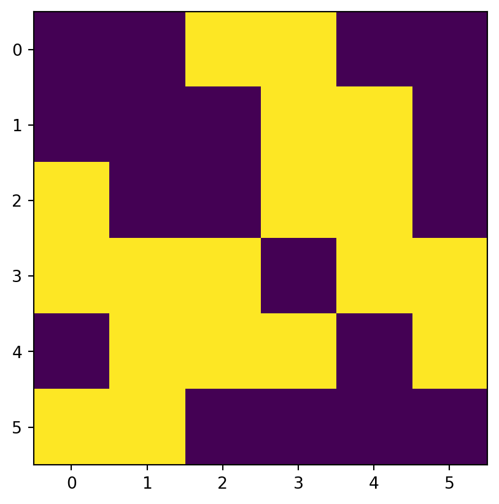
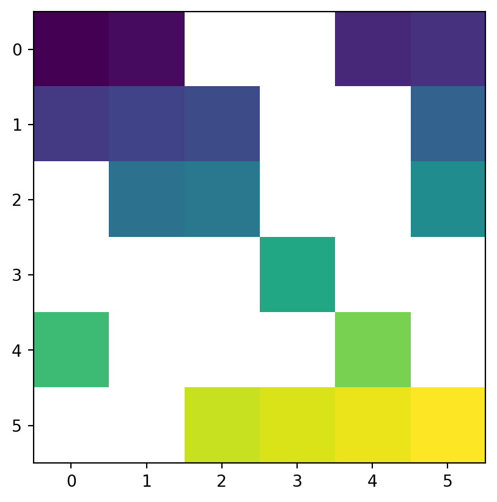
The “mask” can be create from the array itself, using condition(s). That way, we can replace some values (e.g., values assumed to be wrong) with np.nan, such as in the following example.
elev2 = elev.copy()
elev2 = elev2.astype('float64')
elev2[elev2 < 20] = np.nan
elev2array([[nan, nan, nan, nan, nan, nan],
[nan, nan, nan, nan, nan, nan],
[nan, nan, nan, nan, nan, nan],
[nan, 20., 21., 22., 23., 24.],
[25., 26., 27., 28., 29., 30.],
[31., 32., 33., 34., 35., 36.]])This technique is also used to reclassify raster values (see Section 3.3.3).
3.3.2 Map algebra
The term ‘map algebra’ was coined in the late 1970s to describe a “set of conventions, capabilities, and techniques” for the analysis of geographic raster and (although less prominently) vector data (Tomlin 1994). In this context, we define map algebra more narrowly, as operations that modify or summarize raster cell values, with reference to surrounding cells, zones, or statistical functions that apply to every cell.
Map algebra operations tend to be fast, because raster datasets only implicitly store coordinates, hence the old adage “raster is faster but vector is corrector”. The location of cells in raster datasets can be calculated by using its matrix position and the resolution and origin of the dataset (stored in the raster metadata, Section 1.3.1). For the processing, however, the geographic position of a cell is barely relevant as long as we make sure that the cell position is still the same after the processing. Additionally, if two or more raster datasets share the same extent, projection and resolution, one could treat them as matrices for the processing.
Map algebra (or cartographic modeling with raster data) divides raster operations into four subclasses (Tomlin 1990), with each working on one or several grids simultaneously:
- Local or per-cell operations (Section 3.3.3)
- Focal or neighborhood operations. Most often the output cell value is the result of a \(3 \times 3\) input cell block (Section 3.3.4)
- Zonal operations are similar to focal operations, but the surrounding pixel grid on which new values are computed can have irregular sizes and shapes (Section 3.3.5)
- Global or per-raster operations; that means the output cell derives its value potentially from one or several entire rasters (Section 3.3.6)
This typology classifies map algebra operations by the number of cells used for each pixel processing step and the type of the output. For the sake of completeness, we should mention that raster operations can also be classified by discipline such as terrain, hydrological analysis, or image classification. The following sections explain how each type of map algebra operations can be used, with reference to worked examples.
3.3.3 Local operations
Local operations comprise all cell-by-cell operations in one or several layers. Raster algebra is a classical use case of local operations—this includes adding or subtracting values from a raster, squaring and multiplying rasters. Raster algebra also allows logical operations such as finding all raster cells that are greater than a specific value (e.g., 5 in our example below). Local operations are applied using the numpy array operations syntax, as demonstrated below.
First, let’s take the array of elev.tif raster values, which we already read earlier (Section 3.3.1).
elevarray([[ 1, 2, 3, 4, 5, 6],
[ 7, 8, 9, 10, 11, 12],
[13, 14, 15, 16, 17, 18],
[19, 20, 21, 22, 23, 24],
[25, 26, 27, 28, 29, 30],
[31, 32, 33, 34, 35, 36]], dtype=uint8)Now, any element-wise array operation can be applied using numpy arithmetic or conditional operators and functions, comprising local raster operations in spatial analysis terminology. For example elev + elev adds the values of elev to itself, resulting in a raster with double values.
elev + elevarray([[ 2, 4, 6, 8, 10, 12],
[14, 16, 18, 20, 22, 24],
[26, 28, 30, 32, 34, 36],
[38, 40, 42, 44, 46, 48],
[50, 52, 54, 56, 58, 60],
[62, 64, 66, 68, 70, 72]], dtype=uint8)Note that some functions and operators automatically change the data type to accommodate the resulting values, while other operators do not, potentially resulting in overflow (i.e., incorrect values for results beyond the data type range, such as trying to accomodate values above 255 in an int8 array). For example, elev**2 (elev squared) results in overflow. Since the ** operator does not automatically change the data type, leaving it as int8, the resulting array has incorrect values for 16**2, 17**2, etc., which are above 255 and therefore cannot be accomodated.
elev**2array([[ 1, 4, 9, 16, 25, 36],
[ 49, 64, 81, 100, 121, 144],
[169, 196, 225, 0, 33, 68],
[105, 144, 185, 228, 17, 64],
[113, 164, 217, 16, 73, 132],
[193, 0, 65, 132, 201, 16]], dtype=uint8)To avoid this situation, we can, for instance, transform elev to the standard int64 data type, using .astype before applying the ** operator. That way all, results up to 36**2 (1296) can be easily accomodated, since the int64 data type supports values up to 9223372036854775807 (Table 7.3).
elev.astype(int)**2array([[ 1, 4, 9, 16, 25, 36],
[ 49, 64, 81, 100, 121, 144],
[ 169, 196, 225, 256, 289, 324],
[ 361, 400, 441, 484, 529, 576],
[ 625, 676, 729, 784, 841, 900],
[ 961, 1024, 1089, 1156, 1225, 1296]])Now we get correct results.
Note
numpy has the special data types np.int_ and np.float_, which refer to “default” int and float data types. These are platform dependent, but typically resolve to np.int64 and np.float64. Furthermore, the standard Python types int and float refer to those two numpy types, respectively. Therefore, for example, either of the three objects np.int64, np.int_ and int can be passed to .astype in the above example, with identical result. Whereas we’ve used the shortest one, int.
Figure 3.18 demonstrates the result of the last two examples (elev+elev and elev.astype(int)**2), and two other ones (np.log(elev) and elev>5).
rasterio.plot.show(elev + elev, cmap='Oranges');
rasterio.plot.show(elev.astype(int)**2, cmap='Oranges');
rasterio.plot.show(np.log(elev), cmap='Oranges');
rasterio.plot.show(elev > 5, cmap='Oranges');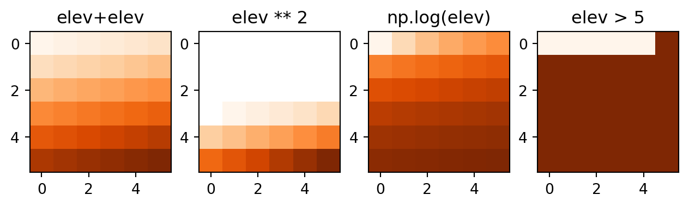
elev+elev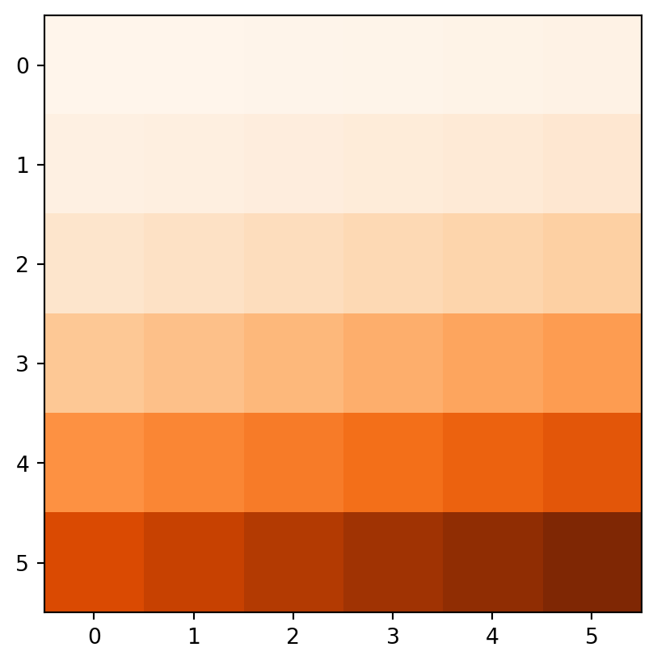
elev.astype(int)**2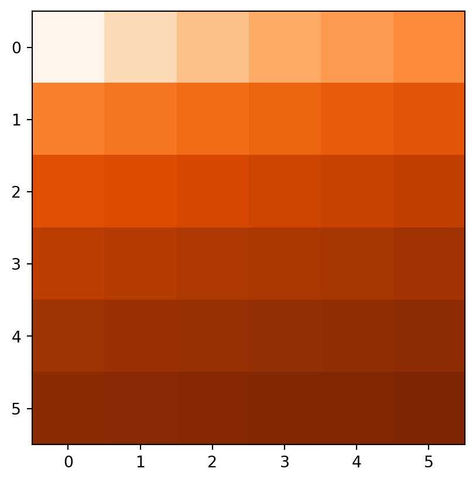
np.log(elev)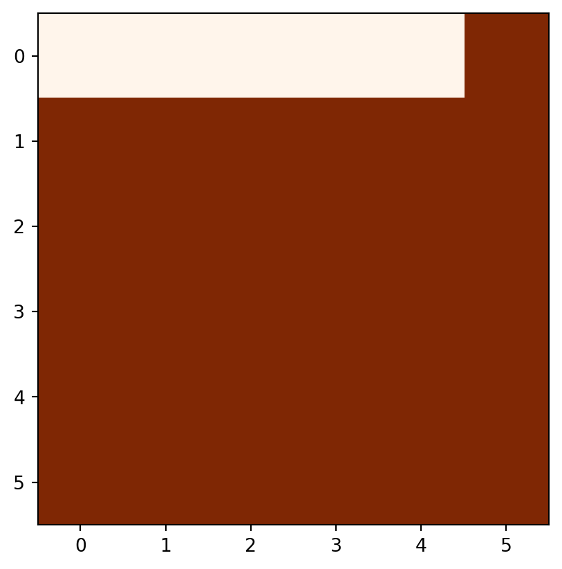
elev>5Another good example of local operations is the classification of intervals of numeric values into groups such as grouping a digital elevation model into low (class 1), middle (class 2) and high elevations (class 3). Here, we assign the raster values in the ranges 0–12, 12–24 and 24–36 are reclassified to take values 1, 2 and 3, respectively.
recl = elev.copy()
recl[(elev > 0) & (elev <= 12)] = 1
recl[(elev > 12) & (elev <= 24)] = 2
recl[(elev > 24) & (elev <= 36)] = 3Figure 3.19 compares the original elev raster with the reclassified recl one.
rasterio.plot.show(elev, cmap='Oranges');
rasterio.plot.show(recl, cmap='Oranges');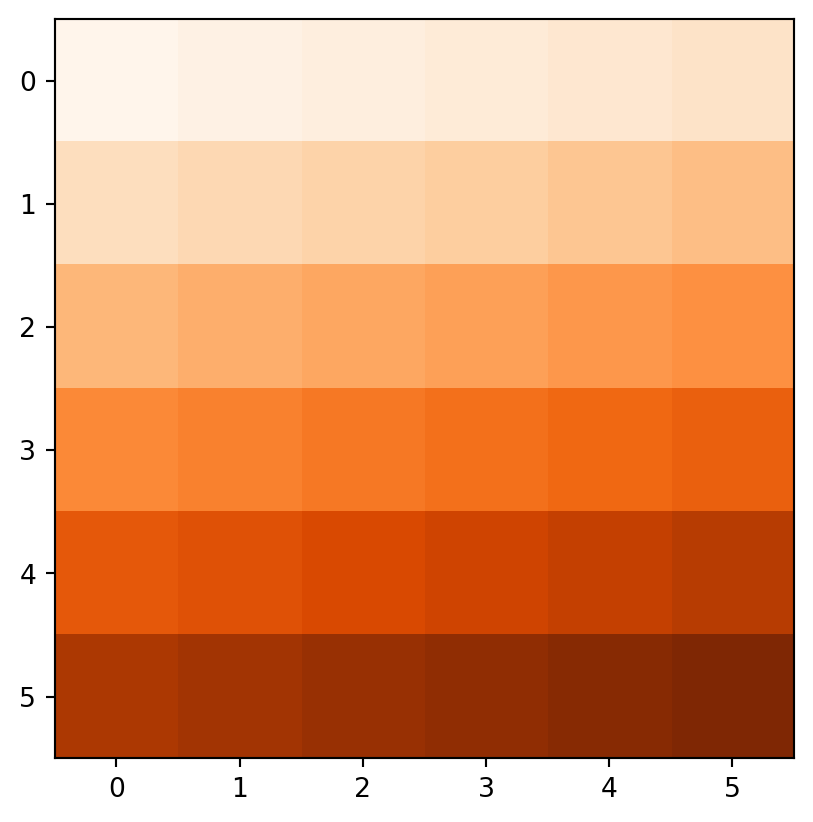
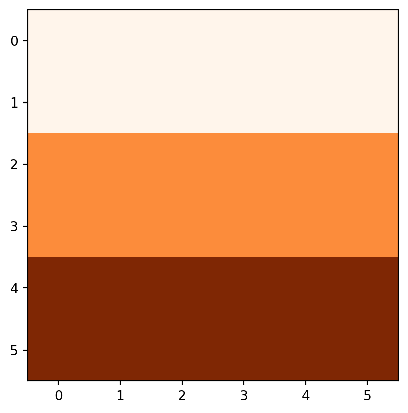
The calculation of the Normalized Difference Vegetation Index (NDVI) is a well-known local (pixel-by-pixel) raster operation. It returns a raster with values between -1 and 1; positive values indicate the presence of living plants (mostly > 0.2). NDVI is calculated from red and near-infrared (NIR) bands of remotely sensed imagery, typically from satellite systems such as Landsat or Sentinel 2. Vegetation absorbs light heavily in the visible light spectrum, and especially in the red channel, while reflecting NIR light, which is emulated in the NVDI formula (Equation 3.1).
\[ NDVI=\frac{NIR-Red} {NIR+Red} \tag{3.1}\]
, where \(NIR\) is the near-infrared band and \(Red\) is the red band.
Let’s calculate NDVI for the multispectral Landsat satellite file (landsat.tif) of the Zion National Park. We start by reading the file and extracting the NIR and red bands, which are the fourth and third bands, respectively. Next, we apply the formula to calculate the NDVI values.
landsat = src_landsat.read()
nir = landsat[3]
red = landsat[2]
ndvi = (nir-red)/(nir+red)We also convert values >1 to “No Data”.
ndvi[ndvi>1] = np.nanWhen plotting an RGB image using the rasterio.plot.show function, the function assumes that values are in the range [0,1] for floats, or [0,255] for integers (otherwise clipped) and the order of bands is RGB. To “prepare” the multi-band raster for rasterio.plot.show, we therefore reverse the order of the first three bands (to go from B-G-R-NIR to R-G-B), using the [:3] slice to select the first three bands and then the [::-1] slice to reverse the bands order, and divide by the raster maximum to set the maximum value to 1.
landsat_rgb = landsat[:3][::-1] / landsat.max()
Note
Python slicing notation, which numpy, pandas and geopandas also follow, is object[start:stop:step]. The default is to start from the beginning, go to the end, and use steps of 1. Otherwise, start is inclusive and end is exclusive, whereas negative step values imply going backwards starting from the end. Also, always keep in mind that Python indices start from 0. When subsetting two- or three-dimensional objects, indices for each dimension are separated by commas, where either index can be set to : meaning “all values”. The last dimensions can also be omitted implying :, e.g., to subset the first three bands from a three-dimensional array a we can use either a[:3,:,:] or a[:3]
In the above example:
- The slicing expression
[:3]therefore means layers0,1,2(up to3, exclusive) - The slicing expression
[::-1]therefore means all (three) bands in reverse order
Figure 3.20 shows the RGB image and the NDVI values calculated for the Landsat satellite image of the Zion National Park.
rasterio.plot.show(landsat_rgb, cmap='RdYlGn');
rasterio.plot.show(ndvi, cmap='Greens');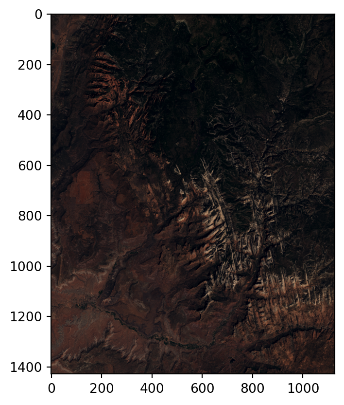
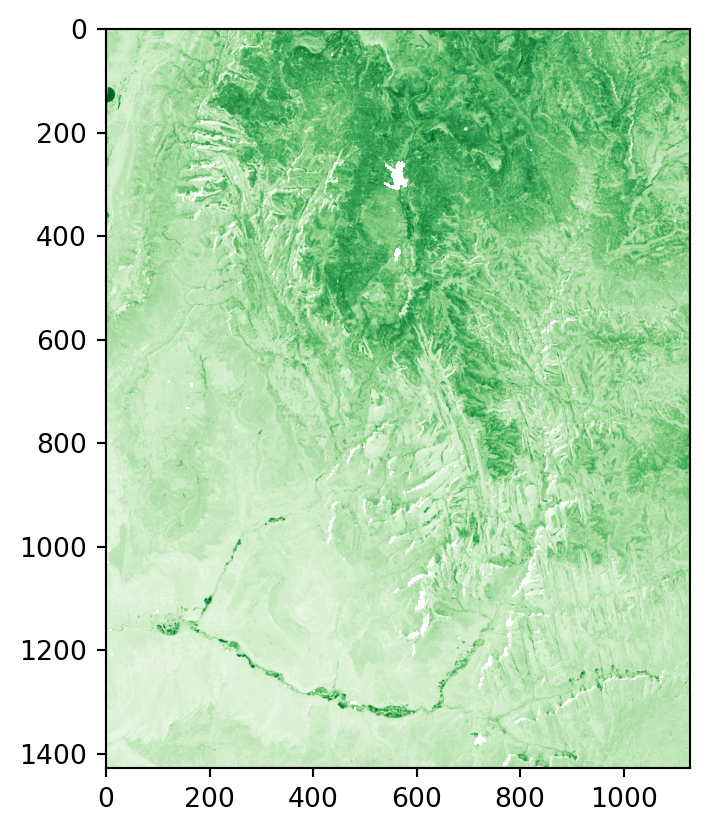
3.3.4 Focal operations
While local functions operate on one cell at time (though possibly from multiple layers), focal operations take into account a central (focal) cell and its neighbors. The neighborhood (also named kernel, filter or moving window) under consideration is typically of \(3 \times 3\) cells (that is, the central cell and its eight surrounding neighbors), but can take on any other (not necessarily rectangular) shape as defined by the user. A focal operation applies an aggregation function to all cells within the specified neighborhood, uses the corresponding output as the new value for the the central cell, and moves on to the next central cell (Figure 3.21). Other names for this operation are spatial filtering and convolution (Burrough, McDonnell, and Lloyd 2015).

In Python, the scipy.ndimage package has a comprehensive collection of functions to perform filtering of numpy arrays, such as:
scipy.ndimage.minimum_filterscipy.ndimage.maximum_filterscipy.ndimage.uniform_filter(i.e., mean filter)scipy.ndimage.median_filteretc.
In this group of functions, we define the shape of the moving window with either one of size—a single number (e.g., 3), or tuple (e.g., (3,3)), implying a filter of those dimensions or footprint—a boolean array, representing both the window shape and the identity of elements being included
In addition to specific built-in filters, convolve—applies the sum function after multiplying by a custom weights array and generic_filter—makes it possible to pass any custom function, where the user can specify any type of custom window-based calculation.
For example, here we apply the minimum filter with window size of 3 on elev. As a result, we now have a new array elev_min, where each value is the minimum in the corresponding \(3 \times 3\) neighborhood in elev.
elev_min = scipy.ndimage.minimum_filter(elev, size=3)
elev_minarray([[ 1, 1, 2, 3, 4, 5],
[ 1, 1, 2, 3, 4, 5],
[ 7, 7, 8, 9, 10, 11],
[13, 13, 14, 15, 16, 17],
[19, 19, 20, 21, 22, 23],
[25, 25, 26, 27, 28, 29]], dtype=uint8)Special care should be given to the edge pixels – how should they be calculated? The scipy.ndimage filtering functions give several options through the mode parameter (see the documentation of any filtering function, such as scipy.ndimage.median_filter, for the definition of each mode): reflect (the default), constant, nearest, mirror, wrap. Sometimes artificially extending raster edges is considered unsuitable. In other words, we may wish the resulting raster to contain pixel values with “complete” windows only, for example to have a uniform sample size or because values in all directions matter (such as in topographic calculations). There is no specific option not to extend edges in scipy.ndimage. However, to get the same effect, the edges of the filtered array can be assigned with np.nan, in a number of rows and columns according to filter size. For example, when using a filter of size=3, the outermost “layer” of pixels may be assigned with np.nan, reflecting the fact that these pixels have incomplete \(3 \times 3\) neighborhoods:
elev_min = elev_min.astype(float)
elev_min[:, [0, -1]] = np.nan
elev_min[[0, -1], :] = np.nan
elev_minarray([[nan, nan, nan, nan, nan, nan],
[nan, 1., 2., 3., 4., nan],
[nan, 7., 8., 9., 10., nan],
[nan, 13., 14., 15., 16., nan],
[nan, 19., 20., 21., 22., nan],
[nan, nan, nan, nan, nan, nan]])We can quickly check if the output meets our expectations. In our example, the minimum value has to be always the upper left corner of the moving window (remember we have created the input raster by row-wise incrementing the cell values by one starting at the upper left corner).
Focal functions or filters play a dominant role in image processing. For example, low-pass or smoothing filters use the mean function to remove extremes. By contrast, high-pass filters accentuate features. The line detection Laplace and Sobel filters might serve as an example here.
In the case of categorical data, we can replace the mean with the mode, which is the most common value. To demonstrate applying a mode filter, let’s read the small sample categorical raster grain.tif.
grain = src_grain.read(1)
grainarray([[1, 0, 1, 2, 2, 2],
[0, 2, 0, 0, 2, 1],
[0, 2, 2, 0, 0, 2],
[0, 0, 1, 1, 1, 1],
[1, 1, 1, 2, 1, 1],
[2, 1, 2, 2, 0, 2]], dtype=uint8)There is no built-in filter function for a mode filter in scipy.ndimage, but we can use the scipy.ndimage.generic_filter function along with a custom filtering function, internally utilizing scipy.stats.mode.
grain_mode = scipy.ndimage.generic_filter(
grain,
lambda x: scipy.stats.mode(x.flatten())[0],
size=3
)
grain_mode = grain_mode.astype(float)
grain_mode[:, [0, -1]] = np.nan
grain_mode[[0, -1], :] = np.nan
grain_mode/tmp/ipykernel_255/45878578.py:3: FutureWarning: Unlike other reduction functions (e.g. `skew`, `kurtosis`), the default behavior of `mode` typically preserves the axis it acts along. In SciPy 1.11.0, this behavior will change: the default value of `keepdims` will become False, the `axis` over which the statistic is taken will be eliminated, and the value None will no longer be accepted. Set `keepdims` to True or False to avoid this warning.
lambda x: scipy.stats.mode(x.flatten())[0],array([[nan, nan, nan, nan, nan, nan],
[nan, 0., 0., 0., 2., nan],
[nan, 0., 0., 0., 1., nan],
[nan, 1., 1., 1., 1., nan],
[nan, 1., 1., 1., 1., nan],
[nan, nan, nan, nan, nan, nan]])
Note
scipy.stats.mode is a function to summarize array values, returning the mode (most common value). It is analogous to numpy summary functions and methods, such as .mean or .max. numpy itself does not provide the mode function, however, which is why we use scipy for that.
Terrain processing is another important application of focal operations. Such functions are provided by multiple Python packages, including the general purpose xarray package, and more specialized packages such as richdem and pysheds. Useful terrain metrics include:
- Slope, measured in units of percent, degreees, or radians (Horn 1981)
- Aspect, meaning each cell’s downward slope direction (Horn 1981)
- Slope curvature, including ‘planform’ and ‘profile’ curvature (Zevenbergen and Thorne 1987)
For example, each of these, and other, terrain metrics can be computed with the richdem package.
Note
Terrain metrics are essentially focal filters with customized functions. Using scipy.ndimage.generic_filter, along with such custom functions, is an option for those who would like to calculate terrain metric through coding by hand and/or limiting their code dependencies. For example, the How Aspect works and How Slope works pages from the ArcGIS Pro documentation provide exlanations and formulas of the required funtions for aspect and slope metrics (Figure 3.22), respectively, which can be translated to numpy-based functions to be used in scipy.ndimage.generic_filter to calculate those metrics.
Another extremely fast, memory-efficient, and concise, alternative, is to the use the GDAL program called gdaldem. gdaldem can be used to calculate slope, aspect, and other terrain metrics through a single command, accepting an input file path and exporting the result to a new file. This is our first example in the book where we demonstrate a situation where it may be worthwhile to leave the Python environment, and utilize a GDAL program directly, rather than through their wrappers (such as rasterio and other Python packages), whether to access a computational algorithm not easily accessible in a Python package, or for GDAL’s memory-efficiency and speed benefits.
Note
GDAL contains a collection of over 40 programs, mostly aimed at raster processing. These include programs for fundamental operations, such as gdal_translate (convert between raster file formats), gdalwarp (raster reprojection), gdal_rasterize (rasterize vector features), and gdal_merge.py (raster mosaic), as well as numerous miscellaneous programs. In this book, we use rasterio for the above-mentioned operations, although the GDAL programs are a good alternative for those who are more comfortable with the command line. However, we do use two GDAL programs for tasks that are lacking in rasterio and not well-implemented in other Python packages: gdaldem (this section), and gdal_contour (Section 5.5.3).
GDAL, along with all of its programs should be available in your Python environment, since GDAL is a dependency of rasterio. The following example, which should be run from the command line, takes the srtm_32612.tif raster (which we are going to create in Section 6.8, therefore it is in the 'output' directory), calculates slope (in decimal degrees, between 0 and 90), and exports the result to a new file srtm_32612_slope.tif. Note that the arguments of gdaldem are the metric name (slope), then the input file path, and finally the output file path.
os.system('gdaldem slope output/srtm_32612.tif output/srtm_32612_slope.tif')Here we ran the gdaldem command through os.system, in order to remain in the Python environment, even though we are calling an external program. You can also run the standalone command in the command line interface you are using, such as the Anaconda Prompt:
gdaldem slope output/srtm_32612.tif output/srtm_32612_slope.tifReplacing the metric name, we can calculate other terrain properties. For example, here is how we can calculate an aspect raster srtm_32612_aspect.tif, also in degrees (between 0 and 360).
os.system('gdaldem aspect output/srtm_32612.tif output/srtm_32612_aspect.tif')Figure 3.22 shows the results, using our more familiar plotting methods from rasterio. The code section is relatively long due to the workaround to create a color key (see Section 8.2.3) and removing “No Data” flag values from the arrays so that the color key does not include them. Also note that we are using one of matplotlib’s the cyclic color scales ('twilight') when plotting aspect (Figure 3.22 (c)).
# Input DEM
src_srtm = rasterio.open('output/srtm_32612.tif')
srtm = src_srtm.read(1).astype(float)
srtm[srtm == src_srtm.nodata] = np.nan
fig, ax = plt.subplots()
rasterio.plot.show(src_srtm, cmap='Spectral_r', ax=ax)
fig.colorbar(ax.imshow(srtm, cmap='Spectral_r'), ax=ax);
# Slope
src_srtm_slope = rasterio.open('output/srtm_32612_slope.tif')
srtm_slope = src_srtm_slope.read(1)
srtm_slope[srtm_slope == src_srtm_slope.nodata] = np.nan
fig, ax = plt.subplots()
rasterio.plot.show(src_srtm_slope, cmap='Spectral_r', ax=ax)
fig.colorbar(ax.imshow(srtm_slope, cmap='Spectral_r'), ax=ax);
# Aspect
src_srtm_aspect = rasterio.open('output/srtm_32612_aspect.tif')
srtm_aspect = src_srtm_aspect.read(1)
srtm_aspect[srtm_aspect == src_srtm_aspect.nodata] = np.nan
fig, ax = plt.subplots()
rasterio.plot.show(src_srtm_aspect, cmap='twilight', ax=ax)
fig.colorbar(ax.imshow(srtm_aspect, cmap='twilight'), ax=ax);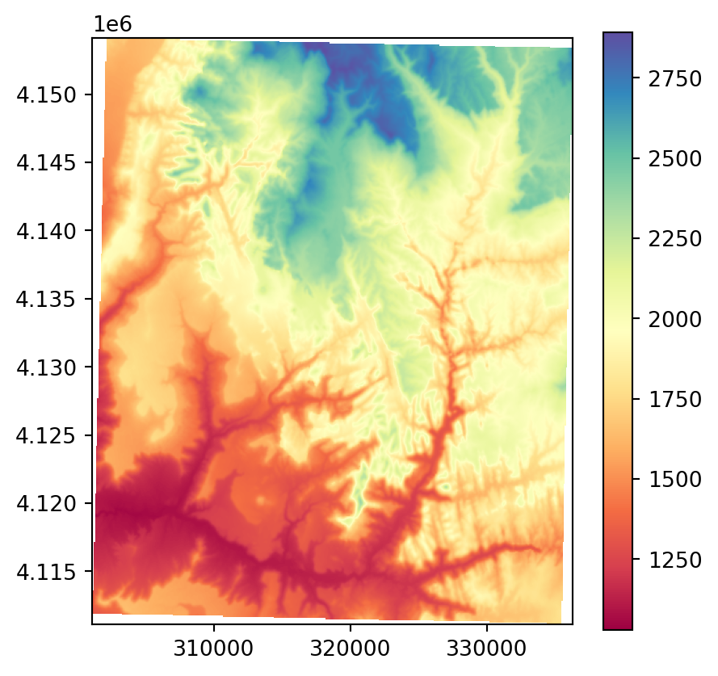
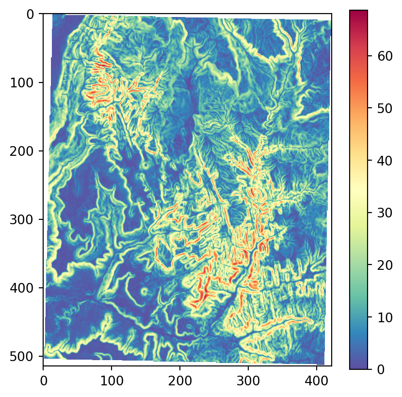
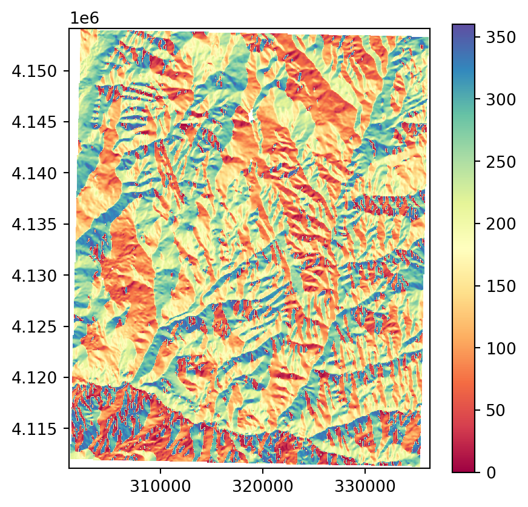
3.3.5 Zonal operations
Just like focal operations, zonal operations apply an aggregation function to multiple raster cells. However, a second raster, usually with categorical values, defines the zonal filters (or ‘zones’) in the case of zonal operations, as opposed to a predefined neighborhood window in the case of focal operation presented in the previous section. Consequently, raster cells defining the zonal filter do not necessarily have to be neighbors. Our grain.tif raster is a good example, as illustrated in Figure 1.25: different grain sizes are spread irregularly throughout the raster. Finally, the result of a zonal operation is a summary table grouped by zone, which is why this operation is also known as zonal statistics in the GIS world. This is in contrast to focal operations (Section 3.3.4) which return a raster object.
To demonstrate, let’s get back to the grain.tif and elev.tif rasters. To calculate zonal statistics, we use the arrays with raster values, which we already imported earlier. Our intention is to calculate the average (or any other summary function, for that matter) of elevation in each zone defined by grain values. To do that, first we first obtain the unique values defining the zones using np.unique.
np.unique(grain)array([0, 1, 2], dtype=uint8)Now, we can use dictionary comprehension to “split” the elev array into separate one-dimensional arrays with values per grain group, with keys being the unique grain values.
z = {i: elev[grain == i] for i in np.unique(grain)}
z{0: array([ 2, 7, 9, 10, 13, 16, 17, 19, 20, 35], dtype=uint8),
1: array([ 1, 3, 12, 21, 22, 23, 24, 25, 26, 27, 29, 30, 32], dtype=uint8),
2: array([ 4, 5, 6, 8, 11, 14, 15, 18, 28, 31, 33, 34, 36], dtype=uint8)}
Note
List comprehension and dictionary comprehension are concise ways to create a list or a dict, respectively, from an iterable object. Both are, conceptually, a concise syntax to replace for loops where we iterate over an object and return a same-length object with the results. Here are minimal examples of list and dictionary comprehension, respectively, to demonstrate the idea:
[i**2 for i in [2,4,6]]—Returns[4,16,36]{i: i**2 for i in [2,4,6]}—Returns{2:4, 4:16, 6:36}
List comprehension is more commonly encountered in practice. We use it in Section 4.2.6, Section 5.4.2, Section 5.5.1, Section 5.5.2, and Section 5.6. Dictionary comprehension is only used in one place in the book (this section).
At this stage, we can expand the dictionary comprehension expression to calculate the mean elevation associated with each grain size class. Namely, instead of placing the elevation values (elev[grain==i]) into the dictionary values, we place their (rounded) mean (elev[grain==i].mean().round(1)).
z = {i: elev[grain == i].mean().round(1) for i in np.unique(grain)}
z{0: 14.8, 1: 21.2, 2: 18.7}This returns the statistics for each category, here the mean elevation for each grain size class. For example, the mean elevation in pixels characterized by grain size 0 is 14.8, and so on.
3.3.6 Global operations and distances
Global operations are a special case of zonal operations with the entire raster dataset representing a single zone. The most common global operations are descriptive statistics for the entire raster dataset such as the minimum or maximum—we already discussed those in Section 2.3.2.
Aside from that, global operations are also useful for the computation of distance and weight rasters. In the first case, one can calculate the distance from each cell to specific target cells or vector geometries. For example, one might want to compute the distance to the nearest coast (see Section 5.6). We might also want to consider topography, that means, we are not only interested in the pure distance but would like also to avoid the crossing of mountain ranges when going to the coast. To do so, we can weight the distance with elevation so that each additional altitudinal meter “prolongs” the Euclidean distance (this is beyond the scope of the book). Visibility and viewshed computations also belong to the family of global operations (also beyond the scope of the book).
3.3.7 Map algebra counterparts in vector processing
Many map algebra operations have a counterpart in vector processing (Liu and Mason 2009). Computing a distance raster (global operation) while only considering a maximum distance (logical focal operation) is the equivalent to a vector buffer operation (Section 4.2.3). Reclassifying raster data (either local or zonal function depending on the input) is equivalent to dissolving vector data (Section 4.2.7). Overlaying two rasters (local operation), where one contains “No Data” values representing a mask, is similar to vector clipping (Section Section 4.2.5). Quite similar to spatial clipping is intersecting two layers (Section 3.2.1, Section 3.2.6). The difference is that these two layers (vector or raster) simply share an overlapping area. However, be careful with the wording. Sometimes the same words have slightly different meanings for raster and vector data models. While aggregating polygon geometries means dissolving boundaries, for raster data geometries it means increasing cell sizes and thereby reducing spatial resolution. Zonal operations dissolve the cells of one raster in accordance with the zones (categories) of another raster dataset using an aggregating function.
3.3.8 Merging rasters
Suppose we would like to compute the NDVI (see Section 3.3.3), and additionally want to compute terrain attributes from elevation data for observations within a study area. Such computations rely on remotely sensed information. The corresponding source imagery is often divided into scenes covering a specific spatial extent (i.e., “tiles”), and frequently, a study area covers more than one scene. Then, we would need to merge (also known as “mosaic”) the scenes covered by our study area. In case when all scenes are “aligned” (i.e., share the same origin and resolution), this can be thought of as simply gluing them into one big raster; otherwise, all scenes should be resampled (see Section 4.3.4) to the grid defined by the first scene.
For example, let us merge digital elevation data from two SRTM elevation tiles, for Austria ('aut.tif') and Switzerland ('ch.tif'). Merging can be done using function rasterio.merge.merge, which accepts a list of raster file connections, and returns the new ndarray and a “transform”, representing the resulting mosaic.
src_1 = rasterio.open('data/aut.tif')
src_2 = rasterio.open('data/ch.tif')
out_image, out_transform = rasterio.merge.merge([src_1, src_2])
Note
Some Python packages (such as rasterio) are split into several so-called sub-modules. The sub-modules are installed collectively when installing the main package. However, each sub-module needs to be loaded separately to be able to use its functions. For example, the rasterio.merge.merge function (see last code block) comes from the rasterio.merge sub-module of rasterio. Loading rasterio with import rasterio does not expose the rasterio.merge.merge function; instead, we have to load rasterio.merge with import rasterio.merge, and only then use rasterio.merge.merge.
Also check out the first code block in this chapter, where we load rasterio as well as three sub-modules: rasterio.plot, rasterio.merge, and rasterio.features.
Figure 3.23 shows both inputs and the resulting mosaic.
rasterio.plot.show(src_1);
rasterio.plot.show(src_2);
rasterio.plot.show(out_image, transform=out_transform);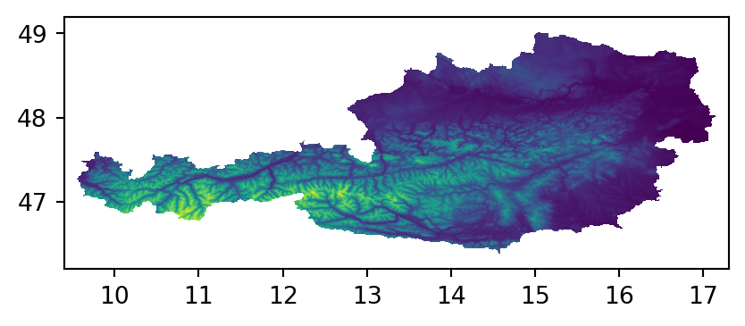
aut.tif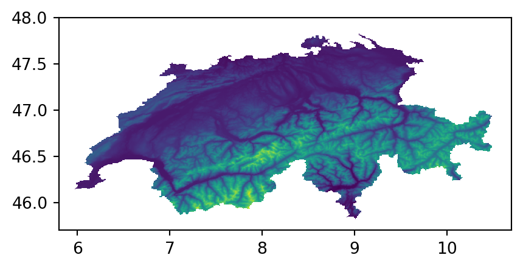
ch.tif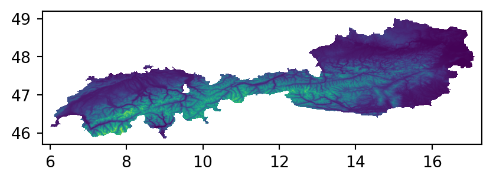
aut.tif+ch.tif)By default in rasterio.merge.merge (method='first'), areas of overlap retain the value of the first raster. Other possible methods are:
'last'—Value of the last raster'min'—Minimum value'max'—Maximum value
When dealing with non-overlapping tiles, such as aut.tif and ch.tif (above), the method argument has no practical effect. However, it becomes relevant when we want to combine spectral imagery from scenes that were taken on different dates. The above four options for method do not cover the commonly required scenario when we would like to compute the mean value—for example to calculate a seasonal average NDVI image from a set of partially overlapping satellite images (such as Landsat). An alternative worflow to rasterio.merge.merge, for calculating a mosaic as well as “averaging” any overlaps, is to go through two steps:
- Resampling all scenes into a common “global” grid (Section 4.3.4), thereby producing a series of “matching” rasters (with the area surrounding each scene set as “No Data”)
- Averaging the rasters through raster algebra (Section 3.3.3), using
np.mean(m,axis=0)ornp.nanmean(m,axis=0)(depending whether we prefer to ignore “No Data” or not), wheremis the multi-band array, which would return a single-band array of averages
3.4 Exercises
- Write a function which accepts and array and an
intspecifying the number of rows/columns to erase along an array edges. The function needs to return the modified array withnp.nanvalues along its edges.
3.5 References
Burrough, P. A., Rachael McDonnell, and Christopher D. Lloyd. 2015. Principles of Geographical Information Systems. Third. Oxford, New York: Oxford University Press.
Dieck, Tammo tom. 2008. Algebraic Topology. EMS Textbooks in Mathematics. Zürich: European Mathematical Society. https://www.maths.ed.ac.uk/~v1ranick/papers/diecktop.pdf.
Egenhofer, Max, and John Herring. 1990. “A Mathematical Framework for the Definition of Topological Relations.” In Proc. The Fourth International Symposium on Spatial Data Handing, 803–13.
Horn, B. K. P. 1981. “Hill Shading and the Reflectance Map.” Proceedings of the IEEE 69 (1): 14–47. https://doi.org/10.1109/PROC.1981.11918.
Liu, Jian-Guo, and Philippa J. Mason. 2009. Essential Image Processing and GIS for Remote Sensing. Chichester, West Sussex, UK, Hoboken, NJ: Wiley-Blackwell.
Lovelace, Robin, Jakub Nowosad, and Jannes Muenchow. 2019. Geocomputation with R. CRC Press. http://robinlovelace.net/geocompr.
Pebesma, Edzer, and Roger Bivand. 2023. Spatial Data Science: With Applications in R. CRC Press. https://r-spatial.org/book/.
Qiu, Fang, Caiyun Zhang, and Yuhong Zhou. 2012. “The Development of an Areal Interpolation ArcGIS Extension and a Comparative Study.” GIScience & Remote Sensing 49 (5): 644–63. https://doi.org/gkb5fn.
Spanier, Edwin Henry. 1995. Algebraic Topology. 1. corr. Springer ed. New York Berlin Barcelona Budapest: Springer.
Tobler, Waldo R. 1979. “Smooth Pycnophylactic Interpolation for Geographical Regions.” Journal of the American Statistical Association 74 (367): 519–30. https://doi.org/ghz78f.
Tomlin, C. Dana. 1990. Geographic Information Systems and Cartographic Modeling. Englewood Cliffs, N.J: Prentice Hall.
———. 1994. “Map Algebra: One Perspective.” Landscape and Urban Planning 30 (1-2): 3–12. https://doi.org/dm2qm2.
Zevenbergen, Lyle W., and Colin R. Thorne. 1987. “Quantitative Analysis of Land Surface Topography.” Earth Surface Processes and Landforms 12 (1): 47–56. https://doi.org/https://doi.org/10.1002/esp.3290120107.